6 Nguyên Lý Quần Vợt Căn Bản (Stan Smith's Six Tennis Basics)
Bản dịch Việt ngữ này chỉ dùng cho mục đích học tập cá nhân, phi thương mại. Bản quyền tác phẩm gốc thuộc về tác giả và nhà xuất bản.
Phần I: Lời Tựa & 3 Nguyên Lý Căn Bản Đầu Tiên
1. Lời Giới Thiệu Của Stan Smith: Bản Chất Của Sự Đơn Giản Trong Quần Vợt Đỉnh Cao
Trong cuốn sách này tôi nêu quan điểm của tôi về cách mọi người có thể chơi quần vợt hiệu quả hơn - từ người mới bắt đầu đến chuyên nghiệp.In this book I set down my views on how tennis can be played more effectively by anyone — from beginner to pro.
Có hai phần chính. Trong phần đầu tiên, tôi mô tả những gì tôi được coi là sáu hành động cơ bản liên quan đến việc đáp ứng hầu hết mọi thử thách thực hiện cú đánh trên sân. Chỉ cần mài giũa một trong những hành động cơ bản này có thể tạo nên sự tiến bộ đáng kể trong lối chơi của bạn.
There are two main sections. In the first, I describe what I consider to be the six basic actions involved in meeting almost any shotmaking challenge on the court. Just sharpening one of these basic actions can make a significant improvement in your play.
Trong phần thứ hai, tôi tập trung vào các thao tác chính trong trò chơi được tiết lộ qua chuỗi ảnh chụp tốc độ cao của một số đồng nghiệp của tôi đang hành động trên đường đua. Ý tưởng ở đây là khuyến khích bạn xác định đúng và sai trong trò chơi của riêng bạn.
In the second section, I focus on the key strokes in the game as revealed by high-speed sequence photography of some of my colleagues in action on the circuit. The idea here is to encourage you to pinpoint rights and wrongs in your own game.
Ở Nơi Khác tôi hãy đưa ra suy nghĩ của tôi về môn đánh trái tay bằng hai tay (mặc dù một vũ khí mạnh tôi cá nhân tôi không thích nó), chiến lược chơi đôi và cuối cùng là khía cạnh tâm lý hết sức quan trọng của trò chơi.
Elsewhere I give my thoughts on the two-handed backhand (a potent weapon though I do not personally favor it), doubles play strategy and, finally, the all-important psychological dimension of the game.
Cuốn sách này có thể hữu ích cho người mới bắt đầu — tay vợt chỉ có một hoặc hai năm kinh nghiệm — bằng cách giúp anh ta thiết lập một khuôn mẫu cơ bản tổng thể, hợp lý cho trò chơi của mình. Nó cũng có thể giúp ích cho tay vợt có trình độ cao hơn bằng cách cung cấp cho anh ta phương tiện để xác định và sửa chữa bất kỳ sự áp dụng sai nguyên tắc cơ bản nào trong cách chơi của anh ta, hoặc bất kỳ điểm yếu rõ ràng nào trong quá trình thực hiện cú đánh của anh ta.
This book can be useful to the beginner — the player with only one or two years’ experience — by helping him establish a sound, overall basic pattern to his game. It can help the more advanced player, too, by giving him the means to identify and correct any misapplication of fundamentals in his play, or any glaring weaknesses in his strokemaking.
Quần vợt đang có một sự bùng nổ phi thường ở Mỹ, chủ yếu là do nhiều người lần đầu tiên phát hiện ra rằng trò chơi này mang lại nhiều niềm vui đến thế nào. Xin đừng đánh mất yếu tố thú vị này vì quá bị ám ảnh bởi sự cải tiến và kỹ thuật. Bằng mọi cách hãy cố gắng cải thiện - và tôi nghĩ rằng cuốn sách này có thể giúp bạn làm được điều đó - nhưng hãy đặt ra những mục tiêu thực tế cho bản thân và kiên nhẫn khi gặp những trở ngại và khó khăn trong học tập. ; Chơi để giành chiến thắng - và tận hưởng niềm vui trong suốt chặng đường.
Tennis is enjoying a phenomenal boom in America, mainly because many people have discovered for the first time how much pleasure there is in the game. Please don’t lose track of this fun element by becoming too obsessed with improvement and technique. By all means try to improve — and I think this book can help you do that — but set realistic goals for yourself and be patient when setbacks and learning blocks crop up.
Trân trọng,
Play to win — and have fun along the way.
2. Nguyên Lý Vàng #1: Thả Lỏng Hoàn Toàn Trên Sân Đấu (Relax on Court)
Căng thẳng làm hỏng nhiều trận đấu quần vợt hơn là thiếu tài năng. Căng thẳng khiến cơ thể bạn khó hoạt động tự nhiên. Nó làm cơ thể bạn mệt mỏi. Nó ảnh hưởng đến thời gian của bạn. Và nó phá hỏng niềm vui mà tay vợt đã có được khi bắt đầu trò chơi ngay từ đầu.Tension ruins far more tennis games than lack of talent. Tension makes it hard for your body to work naturally. It tires your body out. It affects your timing. And it ruins the pleasure for which players have taken up the game in the first place.
Học cách thư giãn trên sân. Điểm này hiếm khi được nhấn mạnh nhưng nó làm nền tảng cho tất cả năm “cơ bản” khác được trình bày trong cuốn sách này và rất cần thiết để thực hiện thành công mọi cú đánh trong quần vợt.
Learn to relax on the court. This point is seldom stressed but it underlies all the other five “basics” presented in this book, and is essential to the successful execution of every stroke in tennis.
Căng thẳng gia tăng theo nhiều cách khác nhau. Những người học các cú đánh mới phải tuân theo nó khi họ cố gắng bắt chước một tay vợt yêu thích hoặc thực hiện những hướng dẫn của một giáo viên được ngưỡng mộ. Có quá nhiều sự khác biệt đáng kể giữa mọi người để bất kỳ cá nhân nào có thể tuân theo một lý tưởng. Đừng lo lắng nếu bạn không thể đạt được chính xác những gì bạn đang theo đuổi. Hãy chơi các cú đánh một cách tự nhiên sau khi bạn đã tiếp thu những nguyên tắc chung về các cú đánh cụ thể từ người hướng dẫn hoặc người mẫu của bạn. Một ví dụ từ kinh nghiệm của chính tôi: đối với tôi, khi học giao bóng, tôi thường ném bóng cao hơn tiêu chuẩn bốn hoặc năm inch. Kết quả là tôi đã phát triển một kiểu dừng lại hoặc tạm dừng trong chuyển động giao bóng của tôi để phù hợp với độ cao tăng thêm khi ném. Nhưng hành động đó khiến tôi cảm thấy thoải mái - và nó đã có hiệu quả.
Tension crops up in various ways. People learning new strokes are subject to it when they try to emulate a favorite player, or to carry out the instructions of an admired teacher. There are too many significant differences among people for any individual to conform to an ideal. Don’t worry if you can’t achieve exactly what you’re after. Play the strokes in a natural manner for you after you have absorbed the general precepts about the particular strokes from your instructor or model. An example from my own experience: it seemed natural to me, when learning to serve, to toss the ball four or five inches higher than standard. As a result I developed a kind of hitch, or pause, in my service motion to accommodate the extra height on the toss. But the action is comfortable for me — and it has worked.
Căng thẳng phá hủy nhịp độ theo nhiều cách. Cơ bắp săn chắc không thể tạo ra những cú đánh uyển chuyển. Một năm tôi đang gặp rắc rối với cú thuận tay của tôi. | tôi tập trung vào việc giữ cho cổ tay thật chắc và điều đó chỉ làm cho vấn đề trở nên tồi tệ hơn. Cuối cùng Pancho Gonzales phát hiện ra tôi đang tập luyện và bảo tôi thả lỏng cổ tay đó ra. “Hãy để cây vợt làm việc đó,” anh ấy gọi tôi. Bằng cách đánh với cơ cẳng tay và bàn tay thoải mái hơn, tôi sớm có thời gian của tôi trở lại. Tôi luôn sử dụng phần khởi động trước trận đấu của tôi để đảm bảo tôi đang thực hiện các cú đánh một cách thoải mái. Thực hiện những cú vung bóng chậm có chủ ý trong thời gian khởi động sẽ rất hữu ích trong việc xây dựng nhịp độ và tạo ra sự phối hợp tốt giữa mắt và mắt.
Tension destroys tempo in many ways. Tight muscles can’t produce fluid strokes. One year I was having trouble with my forehand. I concentrated on keeping my wrist very firm and it only made the problem worse. Finally Pancho Gonzales spotted me practicing and told me to loosen up that wrist. “Let the racquet do the work,” he called to me. By hitting with more relaxed forearm and hand muscles, I soon had my timing back. I always use my pre-match warm-up session to make sure I am making strokes in a relaxed manner. Making deliberately slow swings at the ball during the warm-up is useful in building tempo and in instilling good eye-ball coordination.
Thời gian tạo ra sức mạnh. Vua chạy sân nhà Henry Aaron không quá to lớn và khỏe mạnh, nhưng tính khí thi đấu điềm tĩnh, điềm tĩnh, thoải mái đã giúp anh ấy có thể xoay người ổn định với những pha hành động mượt mà, đúng lúc.
Timing produces power. Home run king Henry Aaron is not excessively big and strong, but his low-key, keep-cool, relaxed playing temperament has made it possible for him to consistently swing with a smooth, well-timed action.
Trong số các vận động viên quần vợt, Arthur Ashe và Tom Okker có thân hình hơi gầy và hầu như không có cơ bắp, nhưng lại nằm trong số những vận động viên khó chơi nhất khi thi đấu thoải mái nhất.
Among tennis players Arthur Ashe and Tom Okker are slight of build and hardly muscle-bound, but among the hardest hitters on the circuit when playing at their most relaxed.
Căng thẳng chủ yếu xuất phát từ sự lo lắng về thành tích thi đấu và việc chiến đấu với nó là mối bận tâm thường trực trong hầu hết các môn thể thao cũng như trong nhiều hoạt động khác của cuộc sống. Đôi khi chỉ cần mỉm cười trước những vấn đề của bạn cũng có thể giúp bạn thoát khỏi nó - và khiến bạn đột nhiên bắt đầu vuốt ve suôn sẻ hơn nhiều.
Tension comes mainly from worry about per formance and battling it is an eternal concern in most sports, and in many other activities of life as well. Sometimes just smiling at your problems can get rid of it — and cause you to start stroking much more smoothly all of a sudden.
Đừng để sự lo lắng cướp đi niềm vui khi chơi quần vợt - và cơ hội chơi hết khả năng của bạn.
Don't let nerves rob you of the fun in tennis — and of the chance to play to the best of your abilities.
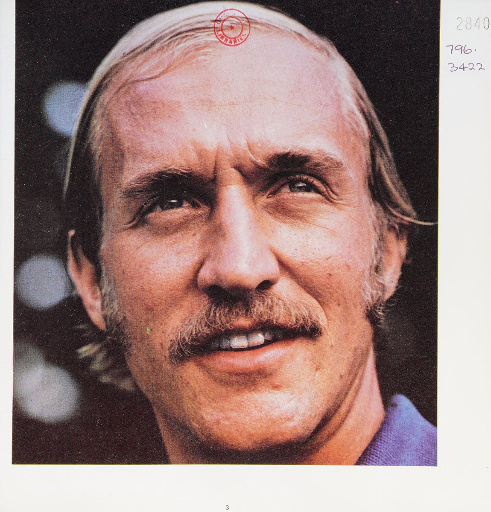
Figure 1: Basic #1: Relax on Court — Eliminating muscle tension in the shoulders and wrists for maximum fluidity and racket head speed.
3. Nguyên Lý Vàng #2: Luôn Trong Tư Thế Sẵn Sàng (Be Ready)
Trong một trò chơi đòi hỏi sự chuyển động và dự đoán như quần vợt, bạn sẽ thi đấu tốt nhất từ tư thế sẵn sàng thoải mái. Điều này có nghĩa là đứng với hai chân cách nhau rộng bằng vai và trọng lượng dồn đều lên đầu bàn chân. Đầu gối được uốn cong. Vợt được cầm ở phía trước, hướng vào đối thủ. Tùy thuộc vào cú đánh sắp tới, vợt có thể được kéo sang hai bên một cách nhanh chóng và mượt mà.In a game of anticipation and movement like tennis, you perform at your best from a comfortable ready position. This means standing with feet apart at about shoulder width and weight evenly balanced on the balls of the feet. Knees are flexed. The racquet is held in front, pointing at opponent. Depending on the oncoming shot, racquet can be drawn to either side quickly and smoothly.
Một tư thế sẵn sàng tốt trong quần vợt cũng tương tự như tư thế của một người đàn ông bảo vệ tay vợt đối phương của mình trong bóng rổ. Cơ thể được thiết lập để phản ứng với trò chơi khi nó phát triển. Cánh tay ở phía trước, tập trung vào mục tiêu. Hai chân co lại, chuẩn bị bật dậy ngay trên iett:
A good ready position in tennis is similar to that of a man guarding his opposing player in basketball. The body is set to respond to the play as it develops. The arms are in front, centered on the target. The legs are bent, prepared to spring right
Vị trí sẵn sàng đặc biệt quan trọng trong việc nhận giao bóng và trong lưới thi đấu. Khi nhận giao bóng, bạn phụ thuộc vào tốc độ và sự khéo léo của đối thủ. Khi chơi trên lưới, thời gian phản ứng của bạn bị giảm đi một nửa vì bạn ở gần đối thủ hơn rất nhiều. Trong cả hai trường hợp, sự sẵn sàng tối đa sẽ giúp bạn tập trung vào vấn đề.
The ready position is especially important in receiving service and in playing net. In receiving serve, you are at the mercy of your opponent's speed and guile. In playing net, your reaction time is cut in half because you’re so much nearer to the opponent. In both cases, maximum readiness helps you stay in the point.
Sự cân bằng tốt là rất quan trọng. Có lẽ không ai phân bổ trọng lượng của mình thành thạo như Ken Rosewall.
Good balance is crucial. Probably no one distributes his weight so adeptly as Ken Rosewall.
Mặc dù Ken là một trong những “ông già” trên đường đua, nhưng anh ấy vẫn giữ thăng bằng cho dù anh ấy đang chạy ở đâu hay anh ấy phải vào vị trí nào để thực hiện cú đánh. Bí mật nằm ở bước chân của anh ấy. Anh ấy dường như không bao giờ để chân mình gục xuống như tôi sợ nhiều người trong chúng ta cũng vậy. Trong cuộc thảo luận của tôi về các chuỗi nét khác nhau được nêu ở đâu đó trong cuốn sách này, tôi thường xuyên chỉ ra cách tay vợt di chuyển bằng chân khi thực hiện cú đánh - cách anh ta nhảy vào vị trí theo đúng nghĩa đen. Tôi nghĩ rằng việc nghiên cứu những trình tự này để biết những gì chúng tiết lộ về động tác bằng chân sẽ giúp ích rất nhiều cho tay vợt gặp vấn đề mất thăng bằng.
Though Ken is one of the “old men” on the circuit, he stays on balance no matter where he’s running or what position he has to get into to make the shot. The secret is in his footwork. He never seems to let his feet fall asleep on him as I’m afraid many of us do. In my discussions of the various stroke sequences featured elsewhere in this book, I frequently point out how the player in question moves with his feet in playing the stroke — how he literally dances into position. I think studying these sequences for what they reveal about footwork will help the player whose problem is getting caught off balance a lot.
Đôi khi đó chỉ là vấn đề của sự lười biếng. Một cách tốt để khắc phục đôi chân lười biếng là tập luyện động tác chân đúng cách trong một thời gian.
Sometimes it is just a question of laziness. A good way to overcome lazy feet is to exaggerate proper footwork for a while.
Điều hòa cũng đóng một vai trò ở đây. Đôi chân mệt mỏi không thể “nhảy múa”’ vào đúng tư thế - chúng khó có thể được kéo vào đúng vị trí. Khi tôi không chơi quần vợt cạnh tranh hàng ngày, tôi đảm bảo tôi chạy bộ hoặc nhảy dây để giữ dáng cho đôi chân của tôi.
Conditioning plays a part here, too. Tired legs can't “dance” into position — they can hardly be dragged into position. When I’m not playing competitive tennis every day, I make sure I jog or skip rope to keep my legs in shape.
Tay cầm thoải mái là một phần của sự sẵn sàng. | 'bắt tay' với cán vợt của tôi để tạo thành cách cầm vợt thuận tay.
A comfortable grip is part of being ready. I “shake hands” with my racquet handle to form the forehand grip.
Một điểm kiểm tra tốt là ấn bàn tay mở của bạn, lòng bàn tay xuống, trên dây vợt, sau đó rút tay thẳng xuống cổ vợt, gót bàn tay trước tiên, đến tay cầm. Sau đó, chỉ cần quấn ngón tay cái và các ngón khác quanh cán vợt, cách cầm vợt thuận tay sẽ được hình thành. Điều này cũng tiết lộ một nguyên tắc hợp lý của cú đánh thuận tay, cụ thể là để thực hiện cú đánh này, lòng bàn tay và mặt vợt phải nằm trên cùng một mặt phẳng. Có thể hữu ích khi tưởng tượng vị trí của bàn tay bạn nếu bạn đánh bóng chỉ bằng tay, như trong môn bóng ném.
A good checkpoint is to press your open hand, palm down, upon the strings of the racquet, then draw the hand straight down the throat of the racquet, heel of hand first, to the handle. Then by simply wrapping thumb and fingers around the handle, the forehand grip is formed. A sound principle of the forehand stroke is revealed by this, too, namely that for making this stroke, palm of hand and racquet face should be in exactly the same plane. It may help to imagine the position your hand would be in if you were hitting the ball with only your hand, as in handball.
Chữ 'V' được tạo bởi ngón cái và ngón trỏ nằm ở phía trên cán vợt ở phía thuận tay. Để thực hiện cú đánh trái tay, | tôi chỉ cần xoay tay sang trái khoảng một phần tám lượt, sao cho chữ 'V' nằm ở cạnh trái.
The “V” formed by thumb and forefinger is on top of the racquet grip in the forehand. For making a backhand, I simply rotate my hand to the left about one/eighth of a turn, so that the “V” is on the left edge.
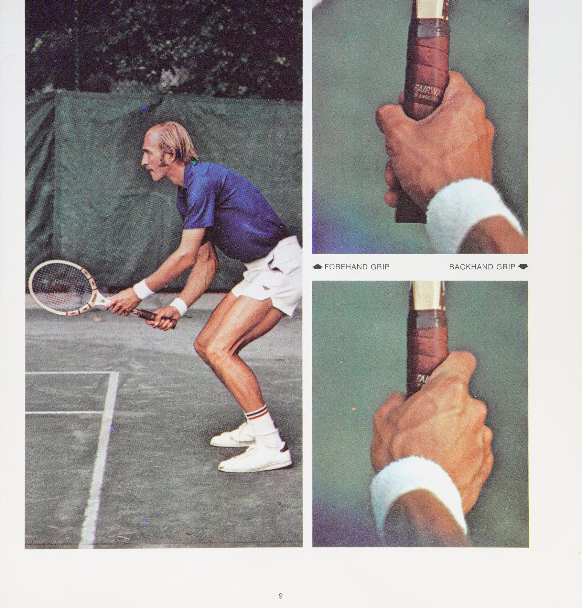
Figure 2: Basic #2: Be Ready — Balanced athletic stance, flexed knees, and forward weight distribution anticipating every return.
4. Nguyên Lý Vàng #3: Mở Vợt Ra Sau Sớm Nhất Có Thể (Get Racquet Back Early)
Một tay súng thành công sẽ là người lấy súng ra khỏi bao nhanh chóng. Một tay vợt quần vợt không lấy lại vợt nhanh, theo một định nghĩa khác, là người có thể mắc rất nhiều sai lầm không cần thiết khi đánh bóng.A successful gunfighter would be someone who gets his pistol out of the holster fast. A tennis player who fails to get his racquet back fast is, by another definition, someone who probably makes a lot of needless mistakes in stroking.
Và bị bắn hạ khi thi đấu.
And gets shot down in competition.
Ở tư thế sẵn sàng (Ready position) chính xác, như được mô tả trước đó, vợt được đưa ra phía trước cơ thể và cách đều mặt thuận tay hoặc phía trái tay. Tại thời điểm này, tay vợt phải tập trung để xác định, trong tích tắc sau cú đánh của đối thủ, xem bên nào sẽ nhận bóng sắp tới. Sau đó anh ta nên vung vợt về phía sau càng nhanh và đầy đủ càng tốt. Anh ta nên cố gắng lấy lại vợt cho đến khi bóng đi qua lưới hoặc muộn nhất là vào thời điểm bóng chạm phần sân bên mình.
In the correct ready position, as described earlier, the racquet is held out in front of the body and equi-distant from the forehand or backhand side. At this point the player must concentrate to determine, in the split-second following his opponent’s shot, on which side to take the oncoming ball. Then he should swing the racquet back as quickly and as fully as possible. He should try to get the racquet back all the way, by the time the ball crosses the net or, at the latest, by the time the ball strikes the court on his side.
Có một số lý do tại sao điều này lại quan trọng đến vậy. Đầu tiên, nó cho phép bạn loại bỏ một trong các biến số trong vô số hành động mà mỗi cú đánh quần vợt yêu cầu. Thay vì lấy lại vợt trong khi bạn cũng đang chạy theo bóng và cố gắng đánh nó, bạn hãy lấy lại vợt ngay lập tức, sau đó tập trung vào vị trí và thực hiện một cú đánh mượt mà. Đặc biệt, những người mới bắt đầu nên thực hiện động tác kéo vợt về phía sau một cách có ý thức.
There are several reasons why this is so important. First, it permits you to eliminate one of the variables in the myriad of actions that each tennis stroke requires. Instead of getting the racquet back while you are also running for the ball and trying to hit it, you get the racquet back immediately, then concentrate on getting into position and making a smooth stroke. Beginners especially should consciously make drawing the racquet back their first priority action.
Một lý do chính đáng khác cho việc thực hiện cú backswing nhanh chóng là nó cho phép tay vợt xử lý tốt hơn những sai lầm trong phán đoán của chính mình hoặc những cú nảy bất ngờ. Ví dụ, khi bạn lấy lại vợt sớm, bạn sẽ chuẩn bị tốt hơn cho một cú giao bóng nhanh. Và nếu quả giao bóng diễn ra chậm thì bạn vẫn sẵn sàng.
Another good reason for a prompt backswing is that it permits the player to better handle mistakes in his own judgment or unexpected bounces. When you get the racquet back early, you are better prepared for a fast serve, for example. And if the serve comes in slow, you're still ready.
Cuối cùng, việc vung vợt ra sau sớm sẽ khuyến khích sự phát triển của một cú đánh đầy đủ, nhịp nhàng, nghĩa là có nhiều sức mạnh hơn và tính nhất quán cao hơn trong thời gian dài. Một người đánh vợt muộn có thói quen sẽ phát triển một kiểu đánh nhanh hoặc cổ tay, không phải là kiểu mà anh ta có thể dựa vào khi thi đấu. Đừng hiểu sai ý tôi - các chuyên gia sẽ sử dụng những cú đánh tạm thời như vậy nếu mất cảnh giác hoặc bị thách thức bởi một cú đánh cực kỳ hung hãn. Giống như tay vợt thấp kém nhất, chúng ta sẽ thọc, vặn hoặc đập vợt nếu điều đó giúp chúng ta đưa bóng qua lưới. Tuy nhiên, ngay cả trong những trường hợp khẩn cấp này, tay vợt có thói quen đánh âm thanh vẫn có lợi thế.
Finally, an early backswing encourages the development of a full, rhythmic stroke which means more power and greater consistency in the long run. An habitual late swinger will develop a whippy or wristy kind of stroke, not one he can rely on in competition. Don’t get me wrong — the pros resort to such makeshift strokes if caught off guard or challenged by an exceptionally aggressive shot. Like the lowliest player, we will jab, twist or flail the racquet if it will help us get the ball over the net. However, even in these emergencies, the player with the sound striking habits has the edge.
Hành động sớm đó cũng khiến vai quay sớm hơn và chuyển nhiều trọng lượng về phía sau hơn. Giống như việc lấy lại cây gậy khỏi quả bóng một cách trơn tru trong môn đánh gôn, việc lấy lại cây vợt trong môn quần vợt tạo tiền đề cho cơ thể phản ứng phù hợp với mục tiêu của nó. .
That early action also causes shoulders to turn earlier and shifts more weight to the back. Like smoothly taking the club back from the ball in golf, taking the racquet back in tennis sets the stage for the body to react on line with its objective.
Tất nhiên là có nhiều phong cách khác nhau. Ví dụ, một số tay vợt thu vợt lại theo một vòng nhỏ. Mặc dù điều này thêm một biến khác vào nét vẽ, nhưng đó là một kiểu có thể chấp nhận được miễn là vòng lặp nhỏ và có thể quản lý được.
Styles vary, of course. For instance, some players take the racquet back in a little loop. Though this does add another variable to the stroke, it is an acceptable style so long as the loop is small and manageable.
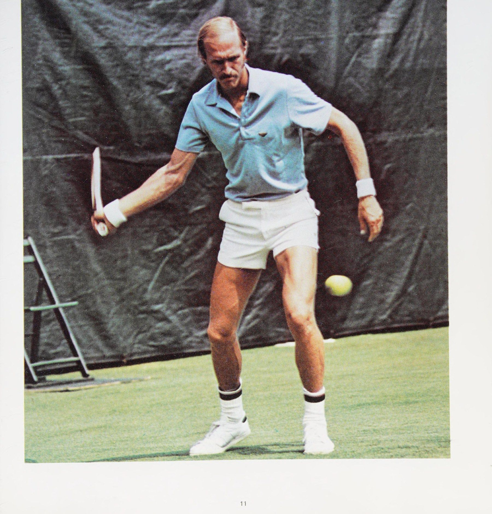
Figure 3: Basic #3: Get Racquet Back Early — Early shoulder unit turn and takeback initiated the instant ball trajectory is identified.
Phần II: 3 Nguyên Lý Căn Bản Tiếp Theo & Hệ Thống Tự Kiểm Soát
5. Nguyên Lý Vàng #4: Dõi Mắt Theo Bóng Đến Điểm Chạm (Keep Eye on the Ball)
Đã bao nhiêu lần và trong bao nhiêu môn thể thao bạn đã nghe thấy cụm từ đó - “‘hãy để mắt đến quả bóng!’ Trong quần vợt tôi dịch thông điệp cực kỳ quan trọng này là: “Hãy chú ý điểm tiếp xúc thêm một giây sau khi bạn đánh bóng.” Có lẽ bạn không thể thực sự nhìn thấy quả bóng bật ra khỏi dây vợt của bạn - hành động này quá nhanh đối với mắt thường. Nhưng có thể nhìn thoáng qua hành động, mặc dù bị mờ, và khi điều đó xảy ra, điều đó có nghĩa là bạn đang cố gắng hết sức để đánh bóng vào giữa vợt, điều mà xét cho cùng mới là mục tiêu.How many times and in how many sports have you heard that phrase — “keep your eye on the ball!” In tennis I translate this all-important message as: “Watch the point of contact for an extra second after you’ve hit the ball.” It’s probably impossible to actually see the ball bounce off your racquet strings — the action is too swift for the naked eye. But it is possible to get a glimpse of the action, albeit blurred, and when that happens it means you are doing your best to hit the ball in the center of the racquet which after all is the objective.
Trong sức nóng trao đổi nhanh trên lưới, thật không dễ để nghĩ đến việc theo dõi điểm tiếp xúc lâu. Tốt nhất hãy phát triển thói quen này trong các buổi thực hành. Thực sự tập trung vào việc nhìn thấy những cú đánh nổ tung khỏi dây của bạn.
In the heat of a fast exchange at net, it is not easy to think in terms of watching the point of contact for long. It is best to develop this habit in practice sessions. Really concentrate on seeing shots explode off your strings.
Một số người hướng dẫn dạy trẻ nguyên tắc tương tự bằng cách khuyến khích chúng “bắt” bóng như thể cây vợt là một cái rổ hay một cái lưới bướm. Trên thực tế, tôi đã nghe nói về một người đã thay dây vợt tập luyện cấp cơ sở của mình bằng lưới đánh cá. Anh ấy đã thành công lớn trong việc truyền đạt thói quen quan sát bóng cho những người mới bắt đầu theo cách này. Tất nhiên, những gì anh ấy đã làm là tạo ra sự tò mò của con người từ tình huống đó - với một cái lưới thay vì một cây vợt, học sinh không cần phải quan tâm đến việc quả bóng sẽ đi đâu sau khi thực hiện cú đánh. Bằng cách tưởng tượng một tấm lưới như vậy hoặc bằng các phương tiện khác, chúng ta phải rèn luyện bản thân để tham gia vào việc thực hiện cú đánh và không bắt đầu quan sát cho đến khi vợt đã quét qua khu vực tiếp xúc.
Some instructors teach youngsters this same principle by encouraging them to “catch” the ball as though the racquet is a basket or a butterfly net. In fact I’ve heard of one who replaced the strings on his junior training racquets with fishnets. He’s had great success in instilling eyeon-ball habits into beginners this way. Of course, what he has done is design human curiosity out of the situation — with a net instead of a racquet the pupil need not concern himself with where the ball is going after he’s made the stroke. By imagining such a net or by other means, we have to train ourselves to stay involved in making the stroke and not start spectating until after the racquet has swept through the contact area.
Bạn không thể xem bóng trong quần vợt từ tư thế chân cứng. Ở những cú đánh thấp, cơ thể phải cúi xuống càng xa càng tốt để mắt có thể nhìn thấy quả bóng trong mặt phẳng chuyển động của nó. Đây là lý do tại sao tay vợt bida cũng cúi xuống để nhìn rõ mục tiêu của mình.
You can’t watch the ball in tennis from a stifflegged stance. On low shots the body has to get down as far as possible to permit the eyes to see the ball in the plane of its movement. This is why billiards players crouch to sight their target properly, too.
Tay còn lại là một thiết bị quan sát hữu ích, đặc biệt là ở phía thuận tay và phía trên đầu. Bàn tay chỉ vào quả bóng giúp bạn “đọc” vị trí của nó tốt hơn, giống như một tiền vệ có thể chuyền bóng chính xác hơn khi anh ta sử dụng tay không ném của mình để chọn ra một người nhận bóng ở phía dưới.
The free hand is a useful sighting device, particularly on the forehand and the overhead. The hand pointing at the ball helps you to “read” its position better, just as a quarterback is able to pass a football more accurately when he uses his non-throwing hand to single out a receiver downfield.
Việc quan sát bóng là rất quan trọng để giao bóng nhịp nhàng.
Watching the ball is vital to serving rhythmically.
Cú giao bóng chỉ ra mối quan hệ giữa sự tập trung thị giác và thời điểm tốt. Khi mắt của người giao bóng chuyển sớm khỏi quả bóng mà anh ta đã ném cao cho đối thủ trên sân giao bóng, cơ thể anh ta cũng sẽ thực hiện hành động đó theo bản năng.
The serve points up a relation between visual concentration and good timing. When a server’s eyes shift prematurely from the ball he has tossed aloft to his opponent on the service court, his body instinctively rushes its action, too.
Đôi mắt chi phối các khả năng tinh thần và thể chất của chúng ta ở mức độ lớn. Đó là lý do tại sao các tay golf hàng đầu làm việc theo hướng mục tiêu một cách nghiêm túc và tại sao các vận động viên ném bóng lại quan sát dọc theo các điểm trên làn đường của họ.
The eyes govern our mental and physical faculties to a large extent. That is why top golfers work at target orientation so seriously, and why bowlers sight along marks in their lane.
Chúng ta càng chú ý đến chuyển động của quả bóng thì tâm trí và cơ thể của chúng ta sẽ càng tập trung và hiệu quả hơn trong hành động tại thời điểm đó.
The more attentive we are to the movement of the ball, the more concentrated and effective will be our mind and body in the action of the
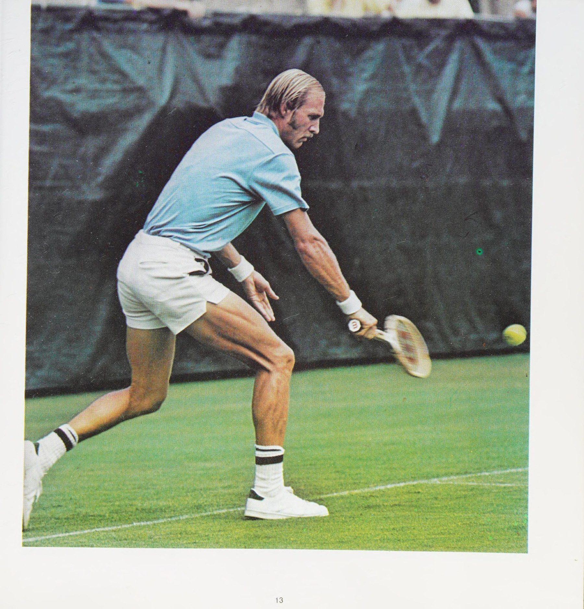
Figure 4: Basic #4: Keep Eye on the Ball — Visual tracking from opponent's racket through the bounce into clean center impact.
6. Nguyên Lý Vàng #5: Đánh Bóng Ở Phía Trước Cơ Thể (Hit the Ball Out in Front)
Khi bạn đánh bóng ở phía trước mặt bạn trong quần vợt, thay vì ở bên cạnh bạn khi nó bay ngang qua, bạn sẽ dồn nhiều lực hơn vào cú đánh của mình với ít nỗ lực hơn. Trọng lượng của bạn tác động lên cú đánh cũng giống như trọng lượng của một tay vợt bóng chày bước vào quả bóng trên đĩa. Hoặc ví dụ như chơi gôn: đối với cú đánh lái - cú đánh mạnh trong chơi gôn - bóng được đánh xa hơn về phía trước - về phía mục tiêu nhiều hơn - so với bất kỳ cú đánh nào khác, để tạo điều kiện chuyển trọng lượng tối đa vào cú đánh.When you hit the ball in front of you in tennis, rather than at your side as it flies by, you are putting more power into your shot with less effort. Your weight is behind the stroke in much the same way as is the weight of a baseball player stepping into a ball across the plate. Or take golf: for the drive — the power shot in golf — the ball is played farther forward — more toward the target — than for any other shot, to facilitate maximum weight shift into the shot.
Kết quả cũng chính xác hơn khi bạn có thể chuyển trọng lượng của mình theo hướng bạn muốn bóng di chuyển. Đôi khi không có thời gian cho việc này. Thay vì bước về phía lưới khi đánh, bạn có thể phải bước chéo người để chạm được bóng. Nhưng với khả năng dự đoán tốt và động tác bằng chân, đây sẽ là ngoại lệ chứ không phải là quy tắc cho những bước tiếp đất của bạn.
More accuracy results, too, when you can shift your weight in the direction you wish the ball to travel. Sometimes there isn’t time for this. Rather than stepping toward the net as you stroke, you may have to take a cross-step just in order to reach the ball. But with good anticipation and footwork, this should be the exception rather than the rule on your groundstrokes.
Nhiều tay vợt nghiệp dư có xu hướng duỗi thẳng cơ thể khi tiếp xúc với bóng. Điều này xảy ra thường xuyên ở những cú đánh thấp bởi vì tay vợt đang cố gắng “theo kiểu Anh” một cách vô thức để đưa bóng qua lưới thay vì để vợt làm việc đó cho mình. Đi thẳng theo cách này sẽ làm mất đi cả lực và hướng của cú đánh.
Many amateur players have a tendency to straighten their bodies when they make contact with the ball. This occurs frequently on low shots because the player is unconsciously trying to “body-english” the ball over the net instead of letting his racquet do the work for him. Going upright in this manner robs the shot of both force and direction.
Có một số cách để học cách đánh phía trước ổn định hơn. Có lẽ cách tốt nhất là sử dụng máy đánh bóng tự động nếu có một máy ở sân nơi bạn thi đấu hoặc nơi bạn đi nghỉ. Điều chỉnh máy để cung cấp các bức ảnh ở phía trước bạn ba hoặc bốn feet. Sau khoảng 20 phút, bạn sẽ cảm thấy thích thú. Một đối tác luyện tập ổn định có thể giúp đỡ theo cách tương tự. Một cách vô thức, bạn cũng sẽ bắt đầu thực hiện hai hành động khác tốt hơn. Bạn sẽ lấy lại được vợt sớm hơn và bạn sẽ linh hoạt đầu gối hơn. Điều đặc biệt quan trọng là phải uốn cong đầu gối và giữ tương đối thấp so với quả bóng đang tới nếu bạn định đánh về phía trước một cách nhất quán. Điều này là do bạn cần đầu gối để đưa bạn tiến về phía trước trong cú đánh. Trình tự màu sắc của các nét vẽ ở những nơi khác trong cuốn sách minh họa rất rõ điểm này. một | ane yy eM :
There are several ways to learn to hit in front more consistently. Perhaps the best way is to make use of an automatic ball machine if there is one at the courts where you play or where you vacation. Adjust the machine to deliver shots three or four feet in front of you. After 20 minutes or so, you'll be in the groove. A steady practice partner can help in the same way. Unconsciously you will have begun executing two other actions better too. You'll be getting the racquet back sooner and you'll be flexing your knees more. It’s especially important to bend the knees and stay relatively low to the oncoming ball if you are going to hit in front consistently. This is because you need your knees to drive you forward into the shot. The color sequences of groundstrokes elsewhere in the book illustrate this point very well.
Figure 5: Basic #5: Hit the Ball Out in Front — Transferring body momentum into the shot for effortless power and precision.
7. Nguyên Lý Vàng #6: Mở Rộng Đà Vung Vợt Kết Thúc Trọn Vẹn (Full Follow-Through)
Một sai lầm phổ biến ở những tay vợt ít kinh nghiệm hơn là niềm tin rằng thời gian theo dõi lâu dài cho thấy sự hoang dã. Trên thực tế, điều ngược lại mới đúng. Bạn càng thực hiện cú đánh đầy đủ bao nhiêu thì khả năng kiểm soát bóng của bạn càng hoàn thiện bấy nhiêu. Điều này là do việc theo dõi bóng lâu hơn cho phép bạn giữ dây vợt trên bóng lâu hơn nhiều. Khi nào | tôi đang chơi tốt tôi cảm giác như quả bóng thực sự ở trên vợt của tôi trong một thời gian dài và điều này mang lại cho tôi sự tự tin và khả năng kiểm soát tuyệt vời.A fallacy common among less experienced players is the belief that a long follow-through indicates wildness. In fact, just the opposite is true. The more fully you follow-through on a stroke, the more complete your control of the ball. This is because the longer follow-through permits you to keep the racquet strings on the ball that much longer. When I am playing well I feel like the ball really is staying on my racquet for a long period of time, and this gives me great confidence and control.
Kiểm tra trình tự màu sắc của các cú chạm đất ở phần khác trong cuốn sách này và nghiên cứu các khung hình cuối cùng khi tay vợt ở trong “‘kết thúc hình ảnh” - vợt được giơ cao và cách xa cơ thể.
Check color sequences of the groundstrokes elsewhere in this book and study the final frames where the player is in his “picture finish” — racquet held high and away from the body.
Một số khán giả coi những vị trí như vậy chỉ là nghệ thuật biểu diễn thuần túy - cao, rộng và đẹp trai vì lợi ích của đám đông sân vận động. Trên thực tế, những tư thế kịch tính, đôi khi giống như khiêu vũ này là một phần đầy đủ chức năng của động tác tiếp đất vững chắc.
Some spectators regard such positions as pure showmanship — high, wide and handsome for the benefit of the stadium crowd. In fact these dramatic, sometimes dance-like postures are a fully functioning part of the solid groundstroke.
Nếu các pha kết thúc của bạn không đầy đủ, điều đó có nghĩa là bạn không đạt được sức mạnh và khả năng kiểm soát tối đa trong trò chơi của mình.
If your finishes aren’t as full, it means you are not obtaining maximum power and control in your game.
Chìa khóa để theo dõi đầy đủ là đánh dọc theo đường bay dự định của cú đánh của bạn càng lâu càng tốt. Một lỗi thường gặp ở những tay vợt có cú vung vợt hạn chế là thực hiện một cú đánh giống như bản lề - một trong đó vợt chỉ hướng thẳng về phía mục tiêu tại một điểm. Mục tiêu của bạn là hướng mặt vợt về phía mục tiêu càng lâu càng tốt. Điều này sẽ tự động buộc bạn phải đánh với độ giãn dài hơn qua bóng.
The key to a full follow-through is hitting along the intended line of flight of your shot for as long as possible. A frequent mistake among players with restrictive swings is to make a hinge-like stroke — one in which the racquet is facing on line toward target at only one point. Your goal should be to have the racquet facing toward target for as long as possible. This will automatically force you to stroke with more extension through the ball.
Tất nhiên là bạn không thể cải thiện một cú đánh chỉ bằng cách mày mò theo dõi. Trong trường hợp cố gắng đánh trên đường dài hơn, trước tiên bạn phải chắc chắn rằng bạn đang ở vị trí để đánh bóng ở phía trước và bạn có động tác bằng chân và đầu gối để đưa cơ thể về phía trước khi vợt của bạn di chuyển theo đường song song vào bóng.
Of course you can’t improve a stroke simply by tinkering with your follow-through. In the case of trying to hit on line longer, you must first be sure you are in position to hit the ball in front of you, and that you have the footwork and knee action to drive forward with your body as your racquet moves on a parallel course into the ball.
Tuy nhiên, bằng cách chuẩn bị tinh thần để theo dõi đầy đủ hơn, bạn sẽ bắt đầu cải thiện kiểu dáng của toàn bộ cú đánh của mình.
By readying yourself mentally to follow-through more fully, though, you will begin to improve the pattern of your entire stroke.
Quá trình tiếp theo cũng thay đổi tùy theo kiểu xoáy mà bạn truyền vào cú đánh. Để tạo xoáy lên mạnh vào bóng, chẳng hạn như khi thực hiện cú đánh thuận tay hoặc trái tay, vợt sẽ bắt đầu ở dưới mức bóng, chạm vào bóng trong một cú vung lên và sau đó kết thúc ở trên cao. Một cú đánh có xoáy ngang sẽ kết thúc thấp hơn và nghiêng về một bên hơn. Một cú sút xoáy xuống, thường được sử dụng trong một cú vô lê hoặc tiếp cận, sẽ kết thúc ở vị trí thấp nhưng dọc theo đường mục tiêu.” Những cú đánh có độ xoáy cực cao là những cú đánh thực sự tinh tế mà hầu hết tay vợt không nên cố gắng đạt được cho đến khi họ thành thạo các cú đánh mặt đất cơ bản của mình. Điều này có nghĩa là tập trung vào việc đưa vợt dọc theo đường càng lâu càng tốt và theo sát mục tiêu của bạn.
The follow-through varies according to the type of spin you impart to the shot, as well. To put heavy topspin on the ball, as when playing a forehand or backhand passing shot, the racquet would start below the level of the ball, brush against the ball on an upward swing and then finish high. A shot with sidespin would finish lower and more to one side. An underspin shot, often used on a volley or approach, would finish low but along the line of the target.” Shots featuring extreme spin are really finesse shots that most players should not try to achieve until they have mastered their basic ground strokes. This means concentrating on carrying the racquet along the line for as long as possible and following through toward your target.
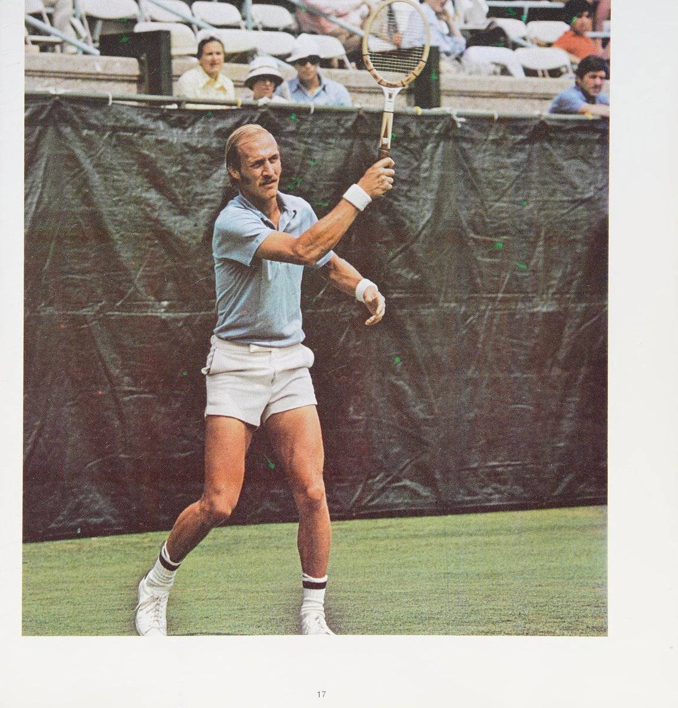
Figure 6: Basic #6: Full Follow-Through — Complete swing extension ensuring deep ball penetration and shot depth.
8. Phân Tích Cú Giao Bóng Uy Lực Của Charles Pasarell
Charlie Pasarell, giám đốc quần vợt tại Palmas del Mar ở quê hương Puerto Rico, có phong cách giao bóng cổ điển nhấn mạnh vào nhịp điệu và thời gian. Sự phối hợp nhịp nhàng giữa cú đánh, tung và chuyển trọng lượng của anh ấy tạo nên một hình mẫu tuyệt vời cho bất kỳ tay vợt nào. ‘Charlito’ bắt đầu động tác giao bóng của mình (Khung số 1) từ tư thế thoải mái cách tâm đường cuối sân khoảng 2-3 feet. Anh ta sẽ thực hiện một cú giao bóng đầu tiên khá bằng phẳng ở đây. Trong đấu đôi, anh ấy sẽ đứng gần đường biên hơn để tăng góc giao bóng. Trọng lượng dồn lên bàn chân phía trước của anh ấy và hướng theo đường chéo - khoảng 45 độ - so với đường thẳng. Đối với quả giao bóng thứ hai, anh ta sẽ đặt chân của mình song song hơn với đường biên một chút. Điều này sẽ giúp anh ta tạo ra một cú giao bóng có nhiều xoáy hơn.Charlie Pasarell, who is the director of tennis at Palmas del Mar in his native Puerto Rico, has a classic service style which stresses rhythm and timing. His fine coordination of stroke, toss and weight shift makes an excellent model for any player. “Charlito” begins his service motion (Frame #1) from a relaxed position about 2-3 feet from the center of the baseline. He will execute a fairly flat first serve here. In doubles play, he would stand nearer the sideline to increase his angle on the serve. Weight is on his forward foot which is pointing diagonally — at about 45 degrees — to the line. For a second serve, he would position his feet somewhat more parallel to the line. This would help him produce a serve with more spin.
Khi chuẩn bị giao bóng, suy nghĩ quan trọng nhất đối với bất kỳ tay vợt nào là thư giãn. Charlie nói với tôi, "Tôi cố gắng cảm thấy thoải mái. Đôi khi tôi cầm vợt bằng tay còn lại khi tôi bước đến vạch, để đảm bảo không có sự căng thẳng nào len lỏi vào bàn tay và cánh tay giao bóng của tôi." Giống như hầu hết các tay vợt, Charlie cũng sẽ đập bóng vài lần trước khi bắt đầu để giảm căng thẳng và tăng nhịp điệu. Điều này hoạt động tương tự như động tác lắc lư trước khi đánh gôn.
In preparing to serve, the most important thought for any player is relaxation. Charlie tells me, “I try to feel loose. Sometimes I hold the racquet in my free hand as I walk to the line, to make sure no tension creeps into my serving hand and arm. Like most players, Charlie will also bounce the ball a couple of times before starting, to reduce tension and promote rhythm. This works the same way as the preswing waggle in golf.
Cú giao bóng quần vợt và cú đánh gôn, mỗi cú giao bóng đều bắt đầu từ một điểm dừng ảo, đặt ra những thách thức tương tự đối với thần kinh và cơ bắp của tay vợt.
The tennis serve and the golf swing, each starting from a virtual standstill, pose similar challenges to a player’s nerves and muscles.
Charlie đang cầm vợt và bóng một cách thoải mái, tự tin. Anh ấy đỡ bóng bằng đầu ngón tay để có cảm giác chạm bóng tối đa. Pasarell sử dụng cùng một cách cầm vợt kiểu Continental cho tất cả các cú đánh của mình, nhưng khi giao bóng, anh ấy duỗi ngón trỏ trên cán vợt (hình nhìn từ # 2) để kiểm soát tốt hơn. Điều quan trọng là tìm một tay cầm giúp bạn kiểm soát thoải mái. Charlie đang cầm vợt ở đây với áp lực mà anh ấy có thể sử dụng để cầm một cốc giấy chứa đầy soda - một cách chắc chắn nhưng không cần siết chặt.
Charlie is holding racquet and ball in a relaxed, confident manner. He supports the ball in his finger-tips for maximum sense of touch. Pasarell uses the same Continental grip for all his strokes, but on the serve he extends his forefinger on the handle (#2 side view) for greater control. The main thing is to find a grip that gives you control with comfort. Charlie is gripping the racquet here with the pressure he might use in holding a paper cup filled with soda — firmly but without squeezing.
Các khung hình từ 2 đến 6 cho thấy sự phối hợp đồng bộ giữa tung bóng và vung vợt của Pasarell. Hãy chú ý cách toàn bộ cánh tay trái của anh ấy, được giữ thẳng, nâng lên theo bóng và ngay sau khi thả ra, trong Khung hình # 2-5. Khi bóng được thả (+4), cánh tay phải của anh ấy duỗi thẳng song song với mặt đất. -Vợt đã được đưa trở lại để cho phép xoay vòng cung tối đa có thể. Cú ném của Charlie cao hơn mức trung bình, trái ngược hoàn toàn với cú ném của Roscoe Tanner được trình bày ở đâu đó trong cuốn sách. Theo quy luật, cú tung bóng càng cao thì cú swing càng dài và nhu cầu căn thời điểm tốt càng lớn. Trong trình tự này, vợt của Charlie tiếp xúc sau khi bóng bắt đầu đi xuống. Hầu hết tay vợt được dạy đánh bóng ở thời điểm cao nhất của cú tung, nhưng có nhiều biến thể tùy thuộc vào đặc điểm cá nhân. Tôi tiếp xúc khi quả bóng đã hạ xuống đủ 4-6 inch so với đỉnh của nó. Và một số tay vợt giao bóng rất nhanh, đôi khi lại đánh trúng bóng trên đường đi lên.
Frames #2 through 6 show Pasarell’s synchronization of ball toss and racquet swing. Notice how his entire left arm, kept straight, rises with the ball, and well after release, during Frames #2-5. When the ball is released (#4), his right arm is extended parallel to the ground. -The racquet has been brought back to permit the fullest possible swing arc. Charlie’s toss is higher than average, in sharp contrast to the toss of Roscoe Tanner shown elsewhere in the book. The higher the toss, as a rule, the longer the swing and the greater the need for good timing. In this sequence Charlie’s racquet makes contact after the ball has begun to descend. Most players are taught to hit the ball at the peak of the toss, but there are many variations depending on individual makeup. I make contact when the ball has descended a full 4-6 inches from its peak. And some players, who have a very fast delivery, sometimes hit the ball on the way up.
Tất nhiên, việc phát triển một cú ném tự nhiên và nhất quán là rất quan trọng để trở thành một người giao bóng giỏi.
Developing a natural and consistent toss is crucial to becoming a good server, of course.
Kiểm tra để chắc chắn rằng vợt của bạn tiếp bóng ở vị trí mà bạn cảm thấy cơ thể mình được duỗi ra hoàn toàn nhưng thoải mái — những người nghiệp dư có xu hướng ném bóng quá thấp và gần họ thay vì quá cao và xa. Sau đó, hãy thực hành cú ném của bạn vào vị trí đánh đó - một loại sân nhà để bạn hình dung trong không trung - cho đến khi cơ thể bạn ghi nhớ hành động đó. Tuy nhiên, con mắt của giáo viên có thể là quan trọng nhất vào thời điểm này - để đảm bảo bạn dành hàng giờ để rèn luyện những thói quen tốt chứ không phải những thói quen xấu.
Check to be sure your racquet is meeting the ball at the spot where you feel your body is fully but comfortably extended — amateurs have a tendency to toss the ball too low and close to them rather than too high and far. Then practice your toss into that hitting spot — a kind of home plate for you to visualize in the air — until your body has memorized the action. A teacher's eye can be most important at this point, though — to ensure you spend hours practicing good habits and not bad ones.
Đầu gối của Pasarell vẫn uốn cong cho đến khi, ở số 7, anh ấy duỗi toàn bộ cơ thể và bắt đầu cú đánh về phía trước. Ban đầu trọng lượng của anh ấy dồn vào chân trái, sau đó nó chuyển sang chân phải khi anh ấy thực hiện cú tung bóng và đưa vợt về phía sau. Bây giờ nó đã chuyển hoàn toàn về phía trước. Trên thực tế, trọng lượng cơ thể của anh ấy xoay quanh bàn chân trái đang neo của anh ấy. Cho đến thời điểm va chạm, nó đi trước vợt. Trong một cú đánh đúng lúc, cánh tay vợt bắt kịp với sự dịch chuyển trọng lượng về phía trước của phần còn lại của cơ thể chính xác vào thời điểm tiếp bóng, như Charlie thể hiện ở #9-10.
Pasarell’s knees remain flexed until, in #7, he stretches his entire body and begins his forward stroke. Initially his weight was on his left foot, then it shifted to his right foot as he made the toss and brought his racquet back. Now it has shifted fully forward. Actually his body weight pivots around his anchoring left foot. Until the moment of impact it precedes the racquet. Ina well-timed stroke, the racquet arm catches up with the forward weight shift of the rest of the body exactly at impact, as Charlie shows in #910.
Một trong những khía cạnh quan trọng nhất của một cú giao bóng tốt được minh họa trong Khung +8. Mặc dù thời điểm va chạm chỉ còn chưa đầy một phần giây nhưng cổ tay của Charlie vẫn chưa bung ra để đưa vợt vào phía sau quả bóng. Tốc độ được tạo ra bởi cú phát bóng muộn (đã bắt đầu ở +9) là yếu tố giúp cú giao bóng có thêm sức mạnh. Hành động có nhịp độ nhanh hơn nhịp độ của tất cả các hành động trước đó trong cú giao bóng.
One of the most important aspects of a good serve is illustrated in Frame #8. Though the moment of impact is only a fraction of a second away, Charlie’s wrist still has not uncocked to deliver the racquet into the back of the ball. The speed generated by the late release (which has begun in #9) is what gives the serve its extra wallop. The action is in a faster cadence than the cadence of all prior actions in the serve.
Pasarell lưu ý, “Tôi cố gắng đảm bảo tôi đang lắc lư tốt trong bản thân mình một cách dễ dàng - đến mức tôi có thể để mọi thứ xảy ra.”’ Cổ tay là tác nhân kích hoạt “‘để mọi thứ xảy ra”. Việc tăng cường sức mạnh đến mức Charlito bị kéo khỏi chân phải theo đúng nghĩa đen. Vợt và cánh tay tạo thành một đường thẳng khi tiếp xúc (xem từ bên #10). Động lượng về phía trước giúp anh ta di chuyển nhẹ nhàng vào sân (#11-12) để thực hiện cú vô lê.
Pasarell notes, “I try to make sure I am swinging well within myself, effortlessly — up to the point where I can let everything happen. The wrist is the trigger for “letting everything happen. Power build-up is such that Charlito is literally pulled off his right foot. Racquet and arm form a straight line at impact (#10 side view). Forward momentum moves him smoothly into the court (#11-12) to find the volley.
Phần III: Phân Tích Kỹ Thuật Thực Chiến Từ Các Nhà Vô Địch
9. Cú Giao Bóng Tay Trái "Đại Bác" Của Roscoe Tanner
Roscoe Tanner, một thanh niên người Mỹ, hiện sống ở Big Canoe, một khu nghỉ dưỡng Sea Pines ở Georgia, là người giao bóng thuận tay trái nhanh nhất trong trò chơi.Roscoe Tanner, a young All-American, who now lives in Big Canoe, a Sea Pines resort in Georgia, has the fastest left-handed delivery in the game.
Cú giao bóng bằng súng thần công của anh ấy, được hiển thị ở đây, không phải không có lý do, được so sánh với cú giao bóng tàn khốc của Pancho Gonzales - người trên thực tế đã giúp Roscoe thực hiện các phần khác nhau trong trận đấu của anh ấy trong vài năm qua.
His cannonball serve, shown here, has been compared not without reason, to the devastating service of Pancho Gonzales — who in fact helped Roscoe with different parts of his game in the past couple of years.
Các trình tự ở đây không chỉ có giá trị đối với người thuận tay trái. Tất cả tay vợt sẽ thấy đây là một bài học thú vị về sức mạnh giao bóng. Về mặt phong cách, nó mang lại sự tương phản rõ rệt với cú giao bóng của Charlie Pasarell, được trình bày trước đây trong cuốn sách này. Cú giao bóng của Charlie có cú tung cao và cú đánh dài, uyển chuyển.
The sequences here is valuable not just to lefthanders. All players should find it an interesting lesson in serve power. Stylistically it provides a marked contrast to the serve of Charlie Pasarell, shown previously in this book. Charlie’s serve features a high toss and a long, fluid stroke. Roscoe is almost exactly the opposite.
Roscoe gần như hoàn toàn ngược lại. Anh ấy có một trong những cú ném thấp nhất và một trong những cú đánh nhỏ gọn nhất trong trò chơi. Hành động giao bóng của anh ấy nhanh đến mức bên cạnh đó hành động giao bóng của Charlie dường như đang chuyển động chậm. Vì thời gian dự đoán của đối phương bị giảm xuống mức tối thiểu trong một cú giao bóng như vậy nên việc phòng thủ có thể cực kỳ khó khăn.
He has one of the lowest tosses and one of the most compact strokes in the game. His serving action is so fast that next to it Charlie’s appears to be in slow motion. Since an opponent's anticipation time is reduced to a minimum in such a serve, it can be extremely hard to defend against. Despite differences, Charlie’s and Roscoe’s serves obey the same fundamentals.
Bất chấp sự khác biệt, các cú giao bóng của Charlie và Roscoe đều tuân theo các nguyên tắc cơ bản giống nhau. Cảm giác thư giãn ngay từ đầu là điều cần thiết đối với Tanner cũng như đối với Pasarell. Roscoe nói: “| cố gắng đi đến vạch cơ bản mà đầu óc tôi không có bất cứ điều gì không liên quan đến vấn đề. "Tôi nảy bóng một vài lần, sau đó cố gắng đặt nó lên không trung tại điểm tôi muốn đánh nó. Khi lấy vợt về, tôi nhấn mạnh việc thả lỏng cánh tay giao bóng của tôi."' Khung 1 cho thấy Roscoe dồn trọng lượng vào bàn chân phía trước, tập trung chăm chú vào mục tiêu.
Feeling relaxed at the outset is as essential to Tanner as it is to Pasarell. “I make an effort to go to the base line with my mind blank of anything extraneous to the point,” Roscoe says. “I bounce the ball a couple of times, then try to place it in the air at the point where I want to hit it. In taking the racquet back, I emphasize keeping my serving arm loose. Frame 1 shows Roscoe with his weight on his forward foot, focusing intently on his target. Rather than pick out a spot in his opponent’s service court, Roscoe aims at a point just over the net.
Thay vì chọn một vị trí trên phần sân giao bóng của đối thủ, Roscoe nhắm vào một điểm ngay trên lưới. Tôi sẽ giới thiệu chiến thuật này cho bất kỳ ai - và có lẽ có nhiều tay vợt như vậy - những người cảm thấy sợ lưới khi giao bóng. Tanner chỉ ra: “Đứng trên ghế ở đường cuối sân và nhìn mục tiêu của bạn từ góc nhìn của cây vợt của bạn”. “Nó giúp bạn hiểu bạn thực sự có bao nhiêu quyền truy cập vào sân giao bóng đó.” Trọng lượng của Tanner di chuyển đến chân sau của anh ấy ở số 2, theo một chuyển động lắc lư giúp thiết lập nhịp điệu cho toàn bộ cú giao bóng của anh ấy. Cú ném bóng của anh ấy ra xa sân và khá thấp - nó không bao giờ cao hơn vị trí được hiển thị trong +7. Bạn ném bóng càng xa sân thì bạn càng phải nghiêng người vào sân để tiếp xúc, và đây một phần là cách Roscoe tạo ra RẤT nhiều sức mạnh, như chúng ta sẽ thấy ở phần sau. Một hệ quả khác: ném bóng càng thấp, bạn càng phải đưa vợt tới lui rồi lại tiến về phía trước để bắt bóng đúng cách. Roscoe làm được điều này nhờ vào cẳng tay rất khỏe và hành động tiến sớm bất thường. Ở Khung số 4, dù mới thả bóng nhưng anh ấy đã tung cú sút bằng chân sau.
I would recommend this tactic to anyone — and there are probably many such players — who feels intimidated by the net when serving. “Stand up on a chair at the baseline and see your target from your racquet’s point of view,” Tanner points out. “It helps you understand how much access you really have to that service court.” Tanner’s weight moves to his back foot by #2, in a rocking motion that helps establish the rhythm of his entire delivery. His ball toss is well out into the court and quite low — it never gets higher than the position shown in #7. The farther into the court that you toss the ball, the more you have to lean into the court to make contact, and this is partly how Roscoe generates SO much power, as we'll see later on. Another corollary: the lower the ball toss, the faster you have to bring your racquet back and down and then forward again in order to catch the ball properly. Roscoe manages this thanks to his very strong forearm and an unusually early forward action. In Frame #4, though he has only just released the ball, he is already kicking off his back foot.
Điều nguy hiểm khi ném bóng quá xa vào sân hoặc ở độ cao thấp như vậy là nếu bạn căn thời gian không hoàn hảo, bạn có thể sẽ bắt đầu đánh bóng vào lưới. Trên thực tế, đây chính là vấn đề của Roscoe trong những ngày tồi tệ - anh ấy hiếm khi mắc sai lầm trong thời gian dài.
The danger in throwing the ball so far into the court or at such a low height is that if your timing is not perfect you’re likely to start hitting into the net. This in fact is Roscoe’s problem on bad days — he seldom errs on the long side.
Tanner đưa vợt về phía sau (#6), sau đó hạ xuống (#7) để chuẩn bị bắt đầu hành động tiến nhanh về phía trước.
Tanner brings his racquet back (#6), then down (#7) preparatory to beginning his rapid forward action.
Sau khi vợt đã đạt đến vị trí “gãi lưng tôi” — điểm cao nhất trong động tác vung vợt sau — cẳng tay của Tanner đẩy vợt lên về phía bóng. Cơ thể của anh ta hướng về phía mục tiêu (+8), sau đó lao về phía trước đầu vợt. Lưu ý rằng, sau Khung số 9, hành động kích hoạt khi cổ tay mở khóa của Tanner sẽ đưa vợt vào mặt phẳng tiếp xúc của nó. Khung +10 (nhìn từ phía sau) cho thấy một quả bóng đại bác thực sự đang được tạo ra - vợt đặt chính giữa phẳng ở mặt sau của quả bóng. Trên sân cỏ, đây sẽ là một cú giao bóng cực kỳ khó thực hiện.
After the racquet has reached the “scratch my back” position — the most extreme point in the backswing — Tanner’s forearm propels the racquet up at the ball. His body turns toward the target (#8), then hurtles well ahead of the racquet head. Note how, after Frame #9, the trigger action of Tanner’s uncocking wrist brings the racquet into its impact plane. Frame #10 (rear view) shows a true cannonball in the making — racquet centered flat on the back of the ball. On grass this will be an unusually difficult serve to return.
Roscoe cố gắng chỉ sử dụng 80% sức mạnh sẵn có của mình để giao bóng, nhưng hãy chú ý rằng hành động của anh ấy ở đây vẫn đủ mạnh để khiến anh ấy mất thăng bằng (#10). Với động lực như vậy, anh ta không còn chỗ nào để đi ngoài sân (#11- 12), điều này đúng như những gì phải xảy ra trong trò chơi giao bóng và vô lê mà các tay vợt chuyên nghiệp hiện đại rất xuất sắc.
Roscoe tries to use only 80 per cent of his available strength in serving, but notice how his action here still is powerful enough to pull him off his feet (#10). With such momentum, there is no place for him to go but into the court (#1112), which is exactly as it should be in the serveand-volley game at which the modern pro excels.
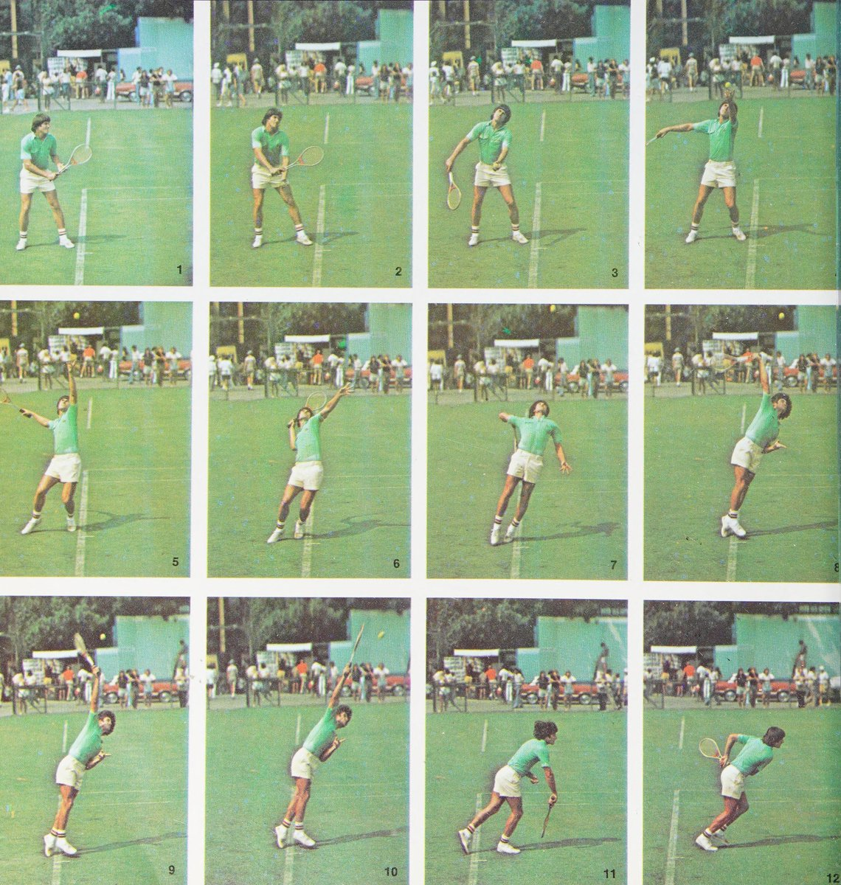
Figure 7: Charles Pasarell's service motion sequence — Full upward extension and classic pronation mechanics.
10. Cú Đánh Thuận Tay Chuẩn Mực Của Brian Gottfried
Chiến thắng lớn đầu tiên của Brian Gottfried là giải Alan King Classic năm 1973 tại Las Vegas, trị giá kỷ lục 30.000 USD tiền thưởng. Một thanh niên đầy quyết tâm đến từ Ft. Lauderdale, Fla., anh ấy là một trong số ngày càng nhiều 'những chú sư tử trẻ' dường như là một sự đánh cược tốt để giúp xây dựng một kỷ nguyên thống trị của Mỹ trong quần vợt thế giới.Brian Gottfried’s big first pro win was the 1973 Alan King Classic in Las Vegas, worth a record $30,000 in prize money. A determined youngster from Ft. Lauderdale, Fla., he is one of a growing number of “young lions” who appear to be a good bet to help build an era of American dominance in world tennis.
Cú thuận tay chắc chắn của Brian, được trình bày theo trình tự ở các trang tiếp theo, nêu bật những điểm cơ bản về cú đánh này. Trong Khung số 1, anh ta ở vị trí cân bằng sẵn sàng cho cú thuận tay hoặc trái tay. Anh ngẩng cao đầu, cảnh giác dự đoán và nhận bóng của đối phương. Đầu gối của anh ấy co lại và trọng lượng của anh ấy được phân bố đều trên các đầu bàn chân. Cây vợt của anh ta ở phía trước – không dành cho: một trong hai bên – và hướng về phía đối thủ.
Brian’s solid forehand, shown in sequences in the following pages, highlights sound fundamentals for this stroke. In Frame #1 he is in a balanced position ready for either a forehand or backhand. His head is up, alert to anticipate and receive the opponent’s ball. His knees are flexed and his weight is evenly distributed on the balls of his feet. His racquet is in front of him — not committed to either side — and pointing toward his opponent.
Ngay khi nhìn thấy bóng đến tay mình, Brian phản ứng bằng cách rút vợt về phía đó, bắt đầu từ #2. Đây là nơi bộc lộ lỗi đầu tiên trong số hai lỗi phổ biến của tay vợt nghiệp dư - không lấy lại vợt đủ nhanh. Phản ứng nhanh ở đây là điều cần thiết để thực hiện một cú đánh đầy đủ và mượt mà. Nó cũng quan trọng trong việc giúp bạn đối phó với những vòng quay không mong đợi hoặc những cú nảy không tốt. Và không có lý do gì để không phát triển đặc điểm này vì chỉ cần thực hành và tập trung một chút.
Soon as he sees the ball coming to his forehand, Brian responds by drawing the racquet back on that side, beginning in #2. Here is where the first of two faults common to the amateur player would reveal itself — not getting racquet back fast enough. A fast reaction here is essential to making a full, smooth stroke. It is also important in helping you cope with unexpected spins or bad bounces. And there’s no excuse for not developing the trait since it only takes a little practice and concentration.
Brian quay người về phía mục tiêu đang tiếp cận (#3) để dọn đường cho việc lấy lại vợt. Lưu ý rằng bàn chân phải của anh ấy bây giờ song song với lưới (ảnh #3). Được neo chắc chắn trên bàn chân sau đó, bây giờ anh ấy bước về phía trước về phía quả bóng (#4-5) và đặt chân trái của mình để tạo nền tảng vững chắc cho cú đánh.
Brian turns sideways to his approaching target (#3) to clear the way for taking the racquet back. Note that his right foot is now parallel to the net (#3 side view). Anchored securely on that back foot, he now steps forward toward the ball (#4-5) and plants his left foot to create a firm platform for the stroke.
Điều đặc biệt rõ ràng ở #6 là Brian đang nhìn chăm chú vào quả bóng. Đây là nơi xảy ra lỗi phổ biến thứ hai đối với những người nghiệp dư - không để mắt đến quả bóng. Tôi nghĩ rằng điều này một phần là do hầu hết mọi người đã có nhiều kinh nghiệm về cú thuận tay của họ hơn bất kỳ cú đánh nào khác và có xu hướng quá tự tin về nó. Nhưng lưu ý rằng đầu của Gottfried vẫn cúi xuống ở Khung số 11, tương đối lâu sau khi anh ấy tiếp xúc với bóng. Tất cả các loại sai sót đều xảy ra khi tay vợt không nỗ lực để “nhìn thấy dây vợt trên quả bóng”. Cú backswing của Brian đã đạt đến điểm cực trị ở +6. Lưu ý rằng vợt không cú đánh vượt qua (Passing shot) phía sau anh ta, điều này cho thấy cú đánh quá mức. Nếu chúng ta dựng một hàng rào phía sau anh ta dọc theo đường được tạo bởi gót chân của anh ta, cây vợt của anh ta sẽ không chạm vào hàng rào này trong cú vung vợt sau của anh ta. Đồng thời, điều quan trọng là phải nhận ra nét vẽ không bị chật chội. Cánh tay phải đưa về phía sau hoàn toàn nhưng thoải mái và khuỷu tay vẫn uốn cong. Brian có lẽ có thể giữ bóng nhét vào nách trong suốt cú đánh này.
It is particularly evident in #6 that Brian is staring intently at the ball. Here is where the second most common fault among amateurs occurs — taking your eye off the ball. I think this is partly because most people have had more experience with their forehand than with any other stroke and tend to get overconfident about it. But note that Gottfried’s head remains down as late as Frame #11, relatively long after he’s made contact with the ball. All sorts of mishits result when a player doesn’t make an effort to “see the racquet strings on the ball.” Brian’s backswing has reached its extreme point in #6. Note that the racquet does not cross behind him, which would indicate overswinging. If we erected a fence behind him along the line formed by his heels, his racquet would not touch this fence on his backswing. At the same time, it is important to realize the stroke is not cramped. The right arm comes back fully but comfortably, and the elbow remains bent. Brian could probably retain a ball tucked into his armpit throughout this stroke.
Brian tiếp xúc với quả bóng cách chân trái của anh ấy vài inch. Đánh về phía trước ít nhất một vài inch là điều cần thiết để có được sức mạnh và độ chính xác tối đa. Nó cũng giúp bạn ở thế cân bằng hơn cho lượt đánh tiếp theo của đối thủ. Brian nói: “Tôi thực hành các cú thuận tay chéo sân sâu khi nhận thấy mình không đánh đủ xa về phía trước. “Đưa bóng vào góc đó buộc tôi phải đánh sớm hơn và thực hiện đầy đủ hơn.” Một kỹ thuật luyện tập tốt cho mọi người, tôi nghĩ.
Brian makes contact with the ball a few inches forward of his left foot. Hitting in front at least a few inches is essential for maximum power and accuracy. It also leaves you in a more balanced position for the opponent’s next return. “I practice deep crosscourt forehands when I find myself not hitting far enough in front,” Brian says. “Getting the ball into that corner forces me to hit earlier and follow through more fully. A good practice technique for anyone, I think.
Cây vợt của anh ấy đi xuyên qua quả bóng theo một mặt phẳng hướng lên trên (#7-9 nhìn từ phía trước), như thể, giống như trong bóng chày, anh ấy đang đánh từ đầu gối đến các chữ cái trong vùng tấn công. Điều này sẽ tạo ra độ xoáy trên khi đánh khi dây vợt lướt qua mặt sau của quả bóng. Topspin cho phép bạn đánh bóng mạnh hơn và vẫn giữ bóng ở phần sân đối phương, vì cú đánh sẽ hơi chìm xuống sau khi nó đi qua lưới. Bóng cũng sẽ nảy thấp hơn, do đó khiến Đối thủ của bạn khó thực hiện cú đánh trả quyết liệt hơn. Tôi thực sự thích cổ tay chắc chắn của Brian trước và sau khi tiếp xúc (+8 và 9) cũng như cách anh ấy giữ vợt di chuyển qua và về phía mục tiêu lâu nhất có thể. Lưu ý rằng cơ thể của anh ấy cũng không thẳng khi va chạm, đây là một lỗi khá phổ biến ở những người mới chơi. Anh ấy vẫn cúi thấp người trước cú đánh, đầu gối cong, thực hiện tốt cú đánh của mình.
His racquet comes through the ball on an upward plane (#7-9 front view), as though, as in baseball, he were hitting from the knees to the letters in the strike zone. This will produce topspin on the shot as the racquet strings brush across the back of the ball. Topspin allows you to hit the ball harder and still keep it in the opponent’s court, since the shot will dip slightly after it crosses the net. The ball will bounce lower as well, thus making it harder for your Opponent to make an aggressive return off the shot. I really like Brian’s firm wrist before and after impact (#8 and 9) and the way he keeps the racquet moving through and toward the target for as long as possible. Notice his body does not straighten at impact, either, which is a fairly common error among novice players. He remains low to the shot, knees bent, well into his followthrough.
Cú xoay toàn lực của Brian kéo vợt vòng qua vai trái của anh ấy (#12) để hoàn thành cú đánh.
Brian’s all-out swing pulls the racquet around over his left shoulder (#12) for a picture finish.
Nếu anh ta đánh một cú thuận tay phẳng hơn, cây vợt của anh ta sẽ kết thúc thấp hơn một chút.
If he had hit a flatter forehand, his racquet would finish somewhat lower.
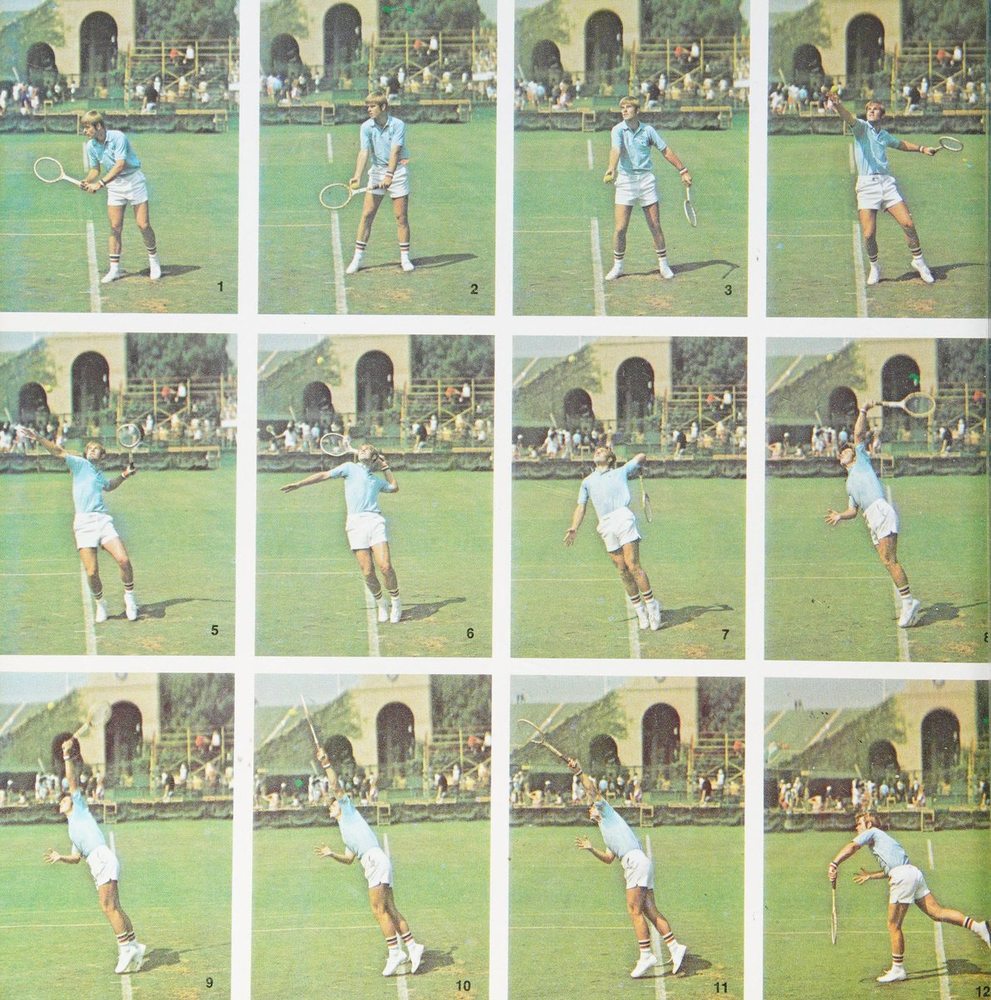
Figure 8: Roscoe Tanner's cannonball delivery — The devastating left-handed serve with ultra-quick toss and explosive torque.
11. Cú Đánh Trái Tay Một Tay Kinh Điển Của Tom Gorman
Tom Gorman là một người Ireland dễ tính đến từ Seattle, nhưng trên sân, anh ấy cũng kiên quyết giành chiến thắng như tất cả chúng ta. Anh ấy tiết lộ một số điểm quan trọng cần được thực hiện về cú đánh trái tay theo trình tự sau.Tom Gorman is an easygoing Irishman from Seattle, but on court he is as dead-set on winning as the rest of us. He reveals a few of the serious points to be made about the backhand stroke in the following sequences.
Giống như hầu hết các tay vợt hàng đầu, Tom có cú đánh trái tay tốt hơn cú đánh thuận tay của anh ấy.
Like most top players, Tom has a backhand stroke that is better than his forehand stroke.
Tại sao điều này lại đúng với giới chuyên môn nói chung? Đơn giản vì cú đánh trái tay là một cú đánh tự nhiên hơn - cánh tay vung vợt quanh cơ thể theo một chuyển động cổ xưa như một người thượng cổ ném một tảng đá. Nhiều người nghiệp dư gặp rắc rối với cú trái tay đơn giản vì họ không sử dụng nó nhiều như cú thuận tay.
Why is this true of the pros in general? Simply because the backhand is a more natural stroke to make — the arm swings the racquet around the body in a motion as old as a caveman hurling a rock. Many amateurs have trouble with the backhand simply because they fail to use it as much as the forehand.
Tom thiết lập cho cú đánh trái tay (Khung số 1) giống như cách anh ấy thực hiện cú đánh thuận tay. Sau khi đoán trước được cách tiếp cận của đối thủ, anh ta xoay người sang trái, đầu tiên bằng phần thân trên. Anh ta sẽ đặt vai của mình thẳng hàng với mục tiêu đang đến gần để có thể gần như 'đẩy' họ vào cú đánh để tăng thêm sức mạnh.
Tom sets up for the backhand (Frame #1) as he would for the forehand. After he anticipates the opponent's approach, he swivels to his left, first with his upper body. He will get his shoulders on a line with the approaching target in order to be able to almost “shove” them into the stroke for extra power.
Gorman sử dụng tay trái một cách hiệu quả để kéo vợt về phía sau. Anh ấy muốn lấy lại cây vợt đó càng sớm càng tốt để có thể tập trung vào vị trí. Lưu ý rằng tay trái của anh ấy không bao giờ hoàn toàn rời khỏi cổ vợt cho đến ngay trước khi va chạm ở Khung 8. “Tôi thực sự cảm thấy tôi kéo vợt bằng tay còn lại để đưa nó trở lại,” anh ấy nói. Tay còn lại cũng giúp đưa vợt trở lại đúng mức.
Gorman uses his left hand effectively in drawing the racquet back. He wants to get that racquet back as soon as possible so he can concentrate on getting into position. Note that his left hand never completely leaves the throat of the racquet until just before impact at Frame 8. “I’ll actually feel I tug the racquet with my free hand in bringing it back,” he says.
Hãy chú ý động tác bằng chân của Tom trong Khung 3-5 khi anh ấy điều chỉnh theo quả bóng đang tới. “Bước chân của tôi không phải là đẳng cấp nhất,” Gorman nói đùa, “tôi chỉ cố gắng để không bị ngã thôi.” Tuy nhiên, trên thực tế, anh ấy làm công việc đảm nhận vị trí ở đây khá tốt. Đôi khi | Hãy nghĩ rằng một nửa quần vợt là nhảy vào và ra khỏi vị trí, giống như một võ sĩ quyền anh, vì vậy đôi chân và đôi chân sống động là điều bắt buộc. Thực tế là khi tôi không chơi quần vợt cạnh tranh nhiều, tôi hãy chú ý chạy bộ hoặc nhảy dây: mỗi ngày để giữ dáng.
The free hand also helps to bring the racquet back at the right level. Notice Tom’s footwork in Frames 3-5 as he adjusts to the oncoming ball. “My footwork is not the classiest,” Gorman says jokingly, “I just try to keep from falling down. Actually, though, he does the job of getting into position here quite well. Sometimes I think that half of tennis is dancing in and out of position, like a boxer, so lively feet and legs are a must. In fact when I’m not playing a lot of competitive tennis, I make it a point to jog or skip rope: every day to stay in shape.
Trong Khung 5-7, nhìn từ phía sau, Tom giống như một vận động viên đánh bóng chày. Cú đánh trái tay quần vợt khá giống với cú vung bóng chày ở chỗ bạn bước vào “sân”, vung từ ngang vai đến ngang thắt lưng, với phần lớn trọng lượng của bạn dồn vào chân trước khi va chạm. Ở +7, chúng ta cũng thấy hành động kéo đặc biệt trong cú đánh trái tay. Một cách hay để có được cảm giác này trong cú đánh trái tay của chính bạn là thực hiện cú đánh như thể bạn đang ném một khay bia hoặc đĩa ném vào không khí.
In Frames 5-7, rear view, Tom resembles a batter in baseball. The tennis backhand is quite similar to the baseball swing in that you do step into the “pitch,” swinging from shoulder level to waist level, with most of your weight ending up on the forward foot at impact. In #7 we also see the distinctive pulling action in the backhand stroke. A good way to get this feeling in your own backhand, is to make the stroke as though you are casting a beer tray or frisbee through the air.
Đầu của Tom cúi xuống với cái nhìn chắc chắn vào quả bóng ở +8, gần va chạm, và cây vợt tăng tốc của anh ấy cuối cùng đã bỏ lại bàn tay “giúp đỡ” bên trái của anh ấy phía sau.
Tom’s head is down with gaze firmly on ball in #8, near impact, and his accelerating racquet is finally leaving his left “helping” hand behind.
Đầu gối phía trước bên phải của anh ấy được uốn cong và vẫn uốn cong trong suốt phần còn lại của cú đánh, thay vì cứng lại khi va chạm.
His right forward knee is flexed and remains flexed throughout the rest of the stroke, rather than stiffening at impact.
Cây vợt của Tom gặp bóng ngay giữa logo shamrock của anh ấy và ở phía trước anh ấy. Điều quan trọng là phải đánh bóng ở phía trước. Lý do rất đơn giản: bạn càng có nhiều trọng lượng phía sau quả bóng và bạn càng có nhiều thời gian để phát triển tốc độ trong vợt khi đưa vợt về phía trước thì bạn sẽ càng đánh mạnh hơn. Điều này có thể rất quan trọng đối với tay vợt câu lạc bộ, người có cú đánh trái tay có thể là cú đánh yếu nhất của anh ta.
Tom’s racquet meets the ball right in the middle of that shamrock logo of his and well in front of him. It is vital to hit the ball in front. The reason is simple: the more weight you have behind the ball, and the more time you have to develop speed in your racquet as you bring it forward, the harder you will hit. This can be crucial to the club player, whose backhand is already likely to be his weakest stroke.
Gorman sử dụng phương pháp này để tập thói quen đánh phía trước: "Tôi chỉ cần đặt một tấm che vợt hoặc lon vợt cách tôi hai hoặc ba feet trước mặt tôi và yêu cầu bạn tập của tôi đưa một số quả bóng vào vị trí đó ở phía bên trái tay của tôi. Sau một thời gian, khi tôi tập trung vào việc tiếp xúc với bóng qua điểm đánh dấu, tôi cảm thấy mình đang quay trở lại rãnh." Theo quy luật, Tom có cú trái tay hơi cổ tay.
Gorman uses this method for getting into the habit of hitting in front: “I just put a racquet cover or can of balls two or three feet in front of me and ask my practice partner to feed some balls to that spot on my backhand side. After a while, as I concentrate on making contact with the ball over the marker, I feel myself getting back into the groove.” As a rule Tom has a slightly wristy backhand.
Tức là anh ta có xu hướng lật vợt vào bóng, theo kiểu cú đấm-cú bắt lưới (Volley), thay vì phía sau và xuyên qua bóng. Nhưng tôi nghĩ rằng vị trí cổ tay của Tom ở mức +10 là tuyệt vời. Mu bàn tay của anh ấy nằm trong cùng mặt phẳng với mặt vợt, một sự tương ứng lý tưởng khi tiếp bóng.
That is, he tends to flip the racquet out at the ball, in a sort of punch-volley stroke, rather than behind and through the ball. But I think Tom’s wrist position in #10 is excellent. The back of his hand is in the same plane as the racquet face, an ideal correspondence at impact.
Tom thực hiện cú đánh tốt (#11), giữ vợt của anh ấy trên đường về phía mục tiêu càng lâu càng tốt. Độ dứt điểm cao (#12) của anh ấy cho thấy một cú đánh tự do. Nhiều tay vợt nghiệp dư không hoàn thành đầy đủ — một số người trong số họ tôi nghi ngờ, bởi vì họ quá nhút nhát để thực hiện một cử chỉ có vẻ ấn tượng như vậy. Nhưng nếu bạn không hoàn thành cú đánh, điều đó có thể có nghĩa là toàn bộ cú đánh của bạn quá co lại.
Tom follows through well (#11), keeping his racquet on a line toward his target for as long as possible. His high finish (#12) is indicative of a free flowing stroke. Many amateur players do not finish as fully — some of them, I suspect, because they are too shy to make such a dramatic looking gesture. But if you don’t finish completely, it may mean your whole stroke was too
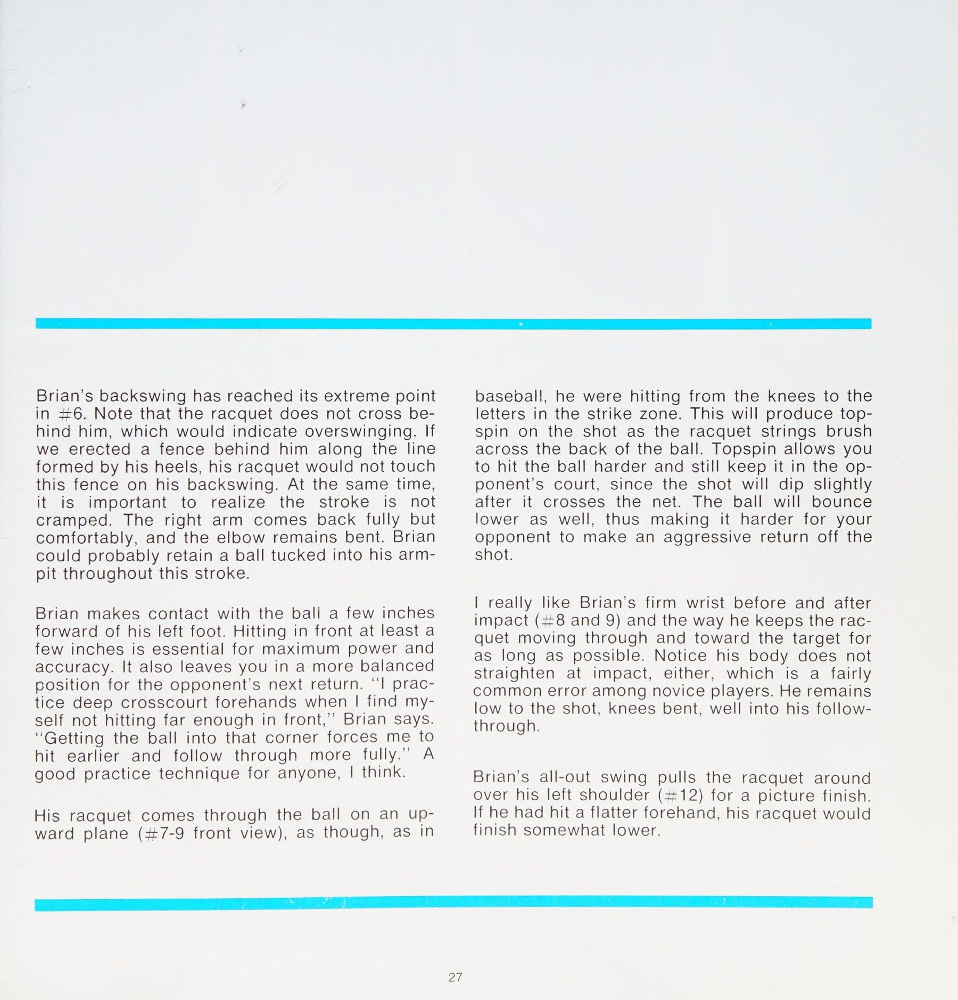
Figure 9: Brian Gottfried's forehand drive sequence — Classical closed stance with fluid linear weight transfer.
12. Kỹ Thuật Bắt Vô-Lê Trên Lưới Chuẩn Xác Cùng Wendy Overton & Erik van Dillen
Cú vô lê thuận tay và trái tay được thể hiện theo trình tự sau bởi Wendy Overton và Erik Van Dillen. Wendy là một cựu huấn luyện viên quần vợt xinh đẹp, người đã tận tâm ghi dấu ấn trên đường đua. Erik là một chàng trai trẻ thông minh, ăn nói lưu loát đến từ Aptos Seascape, California, với phản xạ nhanh nhất trong trò chơi — một lý do tại sao | tôi rất thích có anh ấy vào lưới với tư cách là đối tác đánh đôi của tôi trong cuộc thi Davis Cup. Ở đây chúng tôi trình bày cú vô lê trái tay và thuận tay cạnh nhau để nhấn mạnh thực tế rằng, về cơ bản, mỗi cú đánh đều giống nhau và tuân theo các nguyên tắc cơ bản giống nhau.The forehand and backhand volley are demonstrated in the following sequences by Wendy Overton and Erik Van Dillen. Wendy is a pretty ex-tennis instructor who has become dedicated to making her mark on the circuit. Erik’s a bright, articulate young man from Aptos Seascape, California, with about the fastest reflexes in the game — one reason why I love having him at net as my doubles partner in Davis Cup competition. Here we’re showing the backhand and forehand volley side by side to stress the fact that, basically, each stroke is the same and obeys the same fundamentals.
Cả hai đấu thủ đều giữ tư thế thấp, quan sát bóng thật kỹ và đánh bóng về phía trước bằng một cú đấm ngắn. Họ đấm để giành vị trí thay vì vung kiếm để lấy sức - một lỗi phổ biến trên lưới của những tay vợt kém trình độ hơn.
Both players stay low, watch the ball closely and hit the ball in front with a short punching stroke. They are punching for placement rather than swinging for power — a common error at net among less advanced players.
Vị trí bắt đầu của Wendy trong Khung số 1 không thay đổi đáng kể trong suốt trình tự này.
Wendy’s starting position in Frame #1 does not alter drastically in the course of this sequence.
Điều này là do bạn càng ở gần lưới thì càng có ít thời gian để phản ứng với cú đánh sắp tới. Chẳng hạn, hiếm khi có thể xoay người hoàn toàn sang một bên về phía mục tiêu của bạn, như Người ta thực hiện khi thực hiện các cú đánh trên mặt đất, trong sức nóng của một pha trao đổi nhanh trên lưới.
This is because the closer you are to net, the less time there is to react to an oncoming shot. It is seldom possible, for instance, to turn fully sideways to your target, as One does on groundstrokes, in the heat of a fast exchange at net.
Wendy xoay vai ngay lập tức và điều này cho phép cô ấy chuyển chúng trở lại cú đánh sau đó.
Wendy does turn her shoulders right away, and this permits her to shift them back into the stroke at a later point.
Wendy chuẩn bị sẵn sàng cho cú vô lê của mình bằng cách vặn thân trên và đưa vợt về phía sau không quá vai (#2+5).
Wendy gets ready for her volley by twisting her upper body and taking the racquet back no farther than her shoulder (#2-5).
Lưu ý vị trí tương đối thẳng đứng của vợt - dây hoặc đầu vợt luôn ở cao hơn tay. Đầu của cô ấy nghiêng về phía quả bóng (#8) khi cô ấy cố gắng đưa mắt mình ngang tầm với mục tiêu của mình. Tay vợt gôn áp dụng nguyên tắc tương tự khi họ cúi xuống thực hiện cú gạt bóng của mình - tầm nhìn gần hơn sẽ khuyến khích sự tiếp xúc chắc chắn hơn.
Note the relatively upright position of the racquet — the strings or racquet head stay higher than the hand throughout. Her head inclines toward the ball (#8) as she strives to get her eyes on the same level as her target. Golfers employ the same principle when they stoop over their putts — acloser view encourages more solid contact.
Khi va chạm (+9) Bộ phận cẳng tay-cổ tay của Wendy vẫn vững chắc. Chuyển động của vợt qua quả bóng ở #8-9-10 cho thấy rằng Wendy đã tạo được một ít xoáy xuống trong cú đánh của cô ấy. Điều này sẽ giúp giữ bóng ở mức thấp và hy vọng có thể đi sâu vào phần sân đối phương. Việc trả bóng bằng xoáy xuống là điều mong muốn khi bóng chạm tới bạn ở mức dưới lưới. Khi bóng chạm tới bạn ở vị trí cao hoặc cao hơn lưới, bạn có thể giành chiến thắng hoàn toàn bằng cách bẻ bóng phẳng và theo một góc nhọn.
At impact (#9) Wendy’s forearm-wrist-hand unit remains firm. The movement of the racquet through the ball in #8-9-10 reveals that Wendy has put some underspin on her shot. This will help keep the ball low and hopefully deep in the opponent’s court. Returning with underspin is desirable when the ball reaches you at a level below the net. When the ball reaches you nethigh or above, you can go for an outright winner by cracking the ball flat and at a sharp angle.
Cú đánh vô lê trái tay của Erik ngắn hơn, gọn hơn và có lẽ là mô hình tốt hơn cú đánh dài của Wendy được thể hiện trong so sánh cụ thể này. Chú ý đầu gối của anh ấy luôn uốn cong tốt trong suốt giai đoạn chuẩn bị. Anh ta có thể dọn sạch cơ thể để thực hiện cú đánh chỉ bằng cách xoay phần thân trên của mình ở #4-5. Ngược lại, Wendy nhường chỗ cho hành động vuốt ve của mình bằng cách duỗi thẳng chân phải, ở #7. Erik sẽ có thể thực hiện một cú sút quyết liệt hơn từ vị trí của mình.
Erik’s backhand volley stroke is shorter and more compact and probably a better model than the longish stroke of Wendy’s shown in this particular comparison. Notice how his knees stay well flexed throughout the preparatory stage. He is able to clear his body for the stroke simply by turning his upper body in #4-5. By contrast Wendy makes room for her stroking action by straightening her right leg, in #7. Erik will be able to play a more aggressive shot from his position.
Erik tiếp xúc với bóng, +8-9, ở phía trước. Anh ta đang cố gắng đón bóng trước khi nó bắt đầu rơi xuống, nếu không anh ta có thể phải thực hiện một cú đánh phòng thủ. Nguyên tắc cơ bản trong chơi trên lưới là đánh xuống đối thủ của bạn, thay vì tấn công họ. Điều này có nghĩa là để thực hiện cú vô lê hiệu quả, bạn phải tiếp cận bóng thật nhanh và sau đó bạn phải đánh nó về phía trước.
Erik makes contact with the ball, #8-9, well in front. He is striving to meet the ball before it starts to drop, otherwise he might have to play a defensive shot. The cardinal rule in net play is to hit down on your opponents, rather than up to them. This in turn means that to volley effectively, you must get to the ball quickly and then you must hit it in front.
Các khung hình tác động cho thấy Erik khá giống một vận động viên kiếm đang thực hiện một cú đâm ngắn thay vì dùng kiếm đâm xuyên người của mình. Tuy nhiên, anh ấy dồn rất nhiều trọng lượng cơ thể vào cú đánh (xem đầu gối phía trước của anh ấy uốn cong về phía trước ở mức +8), điều này sẽ tạo ra một cú vô lê mạnh mẽ và xuyên thấu hơn.
The impact frames show Erik rather like a swordfighter who is delivering a short thrust as opposed to running his man through with the sword. Nevertheless he gets a lot of his body weight into the stroke (see his forward knee flex forward in #8) which should produce a more forceful and penetrating volley.
Frame +11 tiết lộ rằng Erik đã bắt được cú đánh gần cơ thể anh ấy và đảm bảo rằng anh ấy đã cầm vợt tốt ở phía trước. Khi bóng đến ngay chỗ bạn, tốt nhất bạn nên đánh trả nó bằng tay trái, thay vì thuận tay, vì bạn có nhiều tự do hành động hơn từ phía đó.
Frame #11 reveals that Erik caught the shot close to his body and made sure he got the racquet well in front. When the ball comes right at you, it is best to volley it back with your backhand, rather than your forehand, because you have greater freedom of action from that side.
Ở #12, Erik chuẩn bị lại tinh thần cho lần chơi tiếp theo.
In #12, Erik re-sets himself for the next play.
Một lời về thực hành. Sử dụng máy bóng là một cách tuyệt vời để phát triển động tác đấm hoặc tát của cú vô lê. Một cách tuyệt vời để cải thiện tốc độ trên lưới của bạn là luyện tập những cú vô lê trong khi hai người bạn đập bóng vào bạn từ phía bên kia. Sử dụng một túi khoảng 50 quả bóng và thực hiện trong 20 phút hoặc ít nhất cho đến khi cánh tay của bạn bắt đầu mỏi.
A word about practice. Using a ball machine is a great way to develop the punching or slapping action of the volley stroke. An excellent way to improve your quickness at net is to practice volleys while two friends bang balls at you from the other side. Use a bag of 50 balls or so and do it for 20 minutes, or at least until your arm has begun to tire.
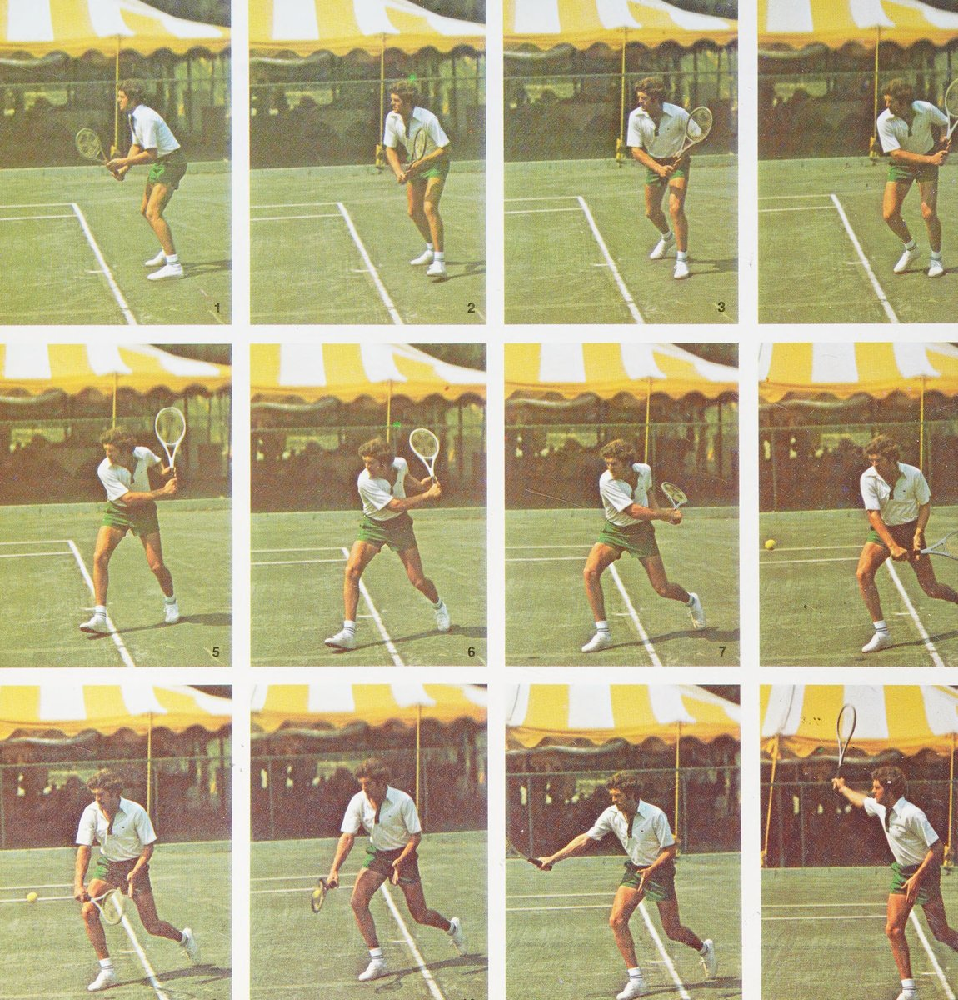
Figure 10: Tom Gorman's one-handed backhand drive — Deep shoulder turn, low-to-high swing path, and classical extension.
Phần IV: Kỹ Thuật Lưới, Cú Đập Smash & Nghệ Thuật Tâm Lý Chiến
13. Cú Đập Bóng Trên Đầu (Overhead Smash) Của Stan Smith
Người hâm mộ luôn cảm thấy thích thú khi chứng kiến một cú đánh đầu thành công, hay cú đập bóng, cú đánh vào lúc 1 giờ sáng được minh họa theo trình tự ở các trang tiếp theo. Đó là cú đánh ấn tượng được sử dụng để thực hiện những cú lốp bóng cao và nó thực sự là hình ảnh thu nhỏ của trò chơi sức mạnh của vận động viên quần vợt chuyên nghiệp hiện đại.Fans always get a kick out of seeing a successful overhead, or smash, the stroke 1am demonstrating in the sequences on the next pages. It’s the dramatic shot used to put away high lobs, and it really epitomizes the power game played by the modern tennis professional.
Về cơ bản, cú đánh là một phần mở rộng của việc thực hiện cú giao bóng, vì vậy đừng bận tâm đến việc thực hành cú đánh qua đầu cho đến khi bạn thực hiện được động tác giao bóng của mình. Phần trên cao chủ yếu bảo vệ khỏi lốp bóng. Giá trị của nó cũng có thể tinh tế. Ngoài việc giành điểm cho bạn, một cú đập tốt còn khiến đối thủ mất tinh thần. Nếu nó luôn có hiệu quả, Đối thủ sẽ quyết định không lốp bóng với bạn thường xuyên như vậy. Điều này sẽ cho phép bạn chơi gần lưới hơn, do đó giúp bạn có thể mài sắc các góc trả bóng của cú vô lê.
Basically the stroke is an extension of the service delivery, so don’t bother practicing an overhead until you’ve got your service motion down pat. The overhead protects against the lob, mainly. Its values can be subtle, too. Aside from winning the point for you, a good smash demoralizes the opponent. If it is consistently effective, Opponents will decide not to lob to you so Often. This in turn will permit you to play in closer to net, thus making it possible for you to sharpen the angles of your volley returns.
Trong Khung 1-2, tôi bắt đầu di chuyển trở lại từ mạng ngay khi tôi nhìn thấy thùy. Tôi cố gắng lùi lại đủ xa, bước chéo thay vì đạp lùi, để có thể bước vào bóng, sao cho tôi đưa cơ thể tôi sang một bên càng sớm càng tốt. Tôi cũng cố gắng đi theo hướng cho phép tôi thực hiện cú đánh trên cao bằng phía thuận tay của mình. Tôi lấy cây vợt ra sau đầu tôi càng sớm càng tốt. Phản ứng nhanh chóng ngay bây giờ về mặt các nguyên tắc cơ bản mang lại cho tôi cơ hội tốt hơn để thực hiện bất kỳ điều chỉnh nào sau này do sự thay đổi thất thường của gió, mặt trời hoặc do tính toán sai lầm của tôi.
In Frames 1-2, I begin moving back from net as soon as I see the lob. I try to move back far enough, cross-stepping rather than back-pedaling, to be able to step into the ball, so that I get my body sideways as soon as possible. I also try to go in a direction that will permit me to make the overhead with my forehand side. I get the racquet behind my head as soon as possible, too. Reacting quickly now in terms of fundamentals gives me a better chance to make any later adjustments demanded by the vagaries of wind, or sun, or by miscalculations on my part.
Nếu tôi được thiết lập để thực hiện cú đánh thích hợp, tôi có thể tập trung vào việc di chuyển đến vị trí tốt nhất và để mắt tới quả bóng.
If I'm set up to deliver the proper stroke, I can concentrate on moving into the best position and keeping my eye on the ball.
Theo Khung 4 tôi đã đặt chân lên, gập đầu gối và nhấc tay trái lên theo cách tương tự như tung bóng để giao bóng. Bây giờ tôi phải cẩn thận quan sát quả bóng đang trôi xuống và “đọc” vị trí của nó qua tay trái của tôi. Với một động tác giao bóng tốt đã được thấm nhuần trong tôi, tôi sẽ biết theo bản năng khi bóng đi vào khu vực đánh bóng của tôi và tôi sẽ bắt đầu cú vung về phía trước của tôi.
By Frame 4 I have planted my feet, flexed my knees and lifted my left hand in a fashion similar to tossing the ball to serve. Now I have to carefully watch the ball floating down and “read” its position off my left hand. With a good service motion instilled in me already, I will know instinctively when the ball passes into my service hitting area, and I will begin my for-
Đó là một cú backswing khá đầy đủ được minh họa trong Khung +6. Hầu hết tay vợt sẽ có thể rút ngắn thời gian vung vợt xuống một nửa mà vẫn thực hiện được cú đánh qua đầu hiệu quả. Không có cách nào dễ dàng để truyền tải cảm xúc của hành động trong các khung hình tiếp theo như tôi bay lên không trung để đạt được mục tiêu của tôi. Một tay vợt thực hiện động tác giao bóng tốt và đã nhìn đúng quả bóng của mình sẽ nhận thấy, khi nào và nếu anh ta bay lên không để thực hiện một cú lốp bóng, thì cơ thể anh ta sẽ phản ứng một cách tự nhiên với tình huống đó. Mặc dù trông có vẻ nhào lộn nhưng thực tế nó chỉ phức tạp hơn một chút so với động tác vung tay và vai của cú giao bóng đầu tiên.
That’s quite a full backswing pictured in Frame #6. Most players will be able to shorten their backswing by half and still make an effective overhead. There’s no easy way to convey the feelings of the action in the subsequent frames as I take to the air to meet my objective. A player applying a good service motion who has correctly sighted his ball will find, when and if he does go airborne for a lob, that his body responds naturally to the situation. Acrobatic though it may appear, it is in fact only a little more complicated than the arm-and-shoulder swing of a first serve.
Tuy nhiên, điều đó sẽ vất vả hơn - vào một ngày nắng nóng, nhiều chi phí như thế này có thể khiến bạn kiệt sức một chút.
It is more strenuous, though — on a hot day, a lot of overheads like this can wear you out a bit.
Hành động kéo của chân tôi thực sự là một hành động vô thức giúp tôi giữ thăng bằng tốt trong quá trình nhảy. Nó xảy ra trong khoảng +5, trong đó tôi đẩy chân phải của tôi ra và #11, ở đâu tôi đất ở bên trái của tôi.
The scissors action of my legs is really an unconscious action which ensures good balance for me during the leap. It occurs between #5, where I push off my right foot, and #11, where I land on my left.
Khi nào bạn nên để quả bóng nảy lên trước khi đánh nó? Nếu bóng đi vào khu vực giữa lưới và vạch giao bóng, bạn nên bắt bóng ngay lập tức trừ khi bóng được đánh quá cao đến mức bạn không chắc chắn về khả năng xử lý bóng của mình. Bóng sắp chạm đất càng xa sân sau thì bạn càng nên cân nhắc để nó nảy lên, đặc biệt nếu bạn đang cố gắng giành lại vị trí. Ngoài ra, bạn có thể để bóng nảy vào những ngày có gió đặc biệt.
When should you let the lob bounce before hitting it? If the ball is coming into the area between the net and the service line, you should take it on the fly unless it is hit so high that you're unsure of your ability to handle it. The farther into the backcourt that the ball is going to land, the more you should consider letting it bounce, particularly if you are scrambling back for position anyway. Also, you may let the ball bounce on particularly windy days.
Các dòng phân phối cú giao bóng của tôi hiển thị trong khung #/7-10. Mọi thứ đã được sắp xếp hợp lý, được chứng minh bằng số 9, góc nhìn từ bên, trong đó vợt và cánh tay của tôi tạo thành một đường thẳng khi tiếp xúc bóng.
The lines of my serving delivery are visible in frames #7-10. Everything has been timed well as evidenced by #9, side view, where my racquet and arm form a straight line at impact.
Mặt phẳng của vợt ở #10 thể hiện tôi đã hướng cú đập của tôi vào sân quảng cáo của đối thủ - ở góc bên phải của tôi khi tôi đang đánh. Nói chung, bạn nên nhắm một cú ném từ trên cao vào góc trống. Tuy nhiên, ngay cả trong số những tay vợt chuyên nghiệp, tay vợt cũng phát triển các hướng ưa thích cho các cú đập của họ và đôi khi có thể dự đoán chính xác đến mức bạn có thể thực hiện một số kiểu trả bóng.
The plane of the racquet in #10 shows I have directed my smash at the opponent’s ad court — in the corner to my right as I’m hitting. Generally, you should aim an overhead at the open corner. Even among the pros, though, players develop preferred directions for their smashes, and it occasionally is possible to anticipate so correctly that you can make some kind of return.
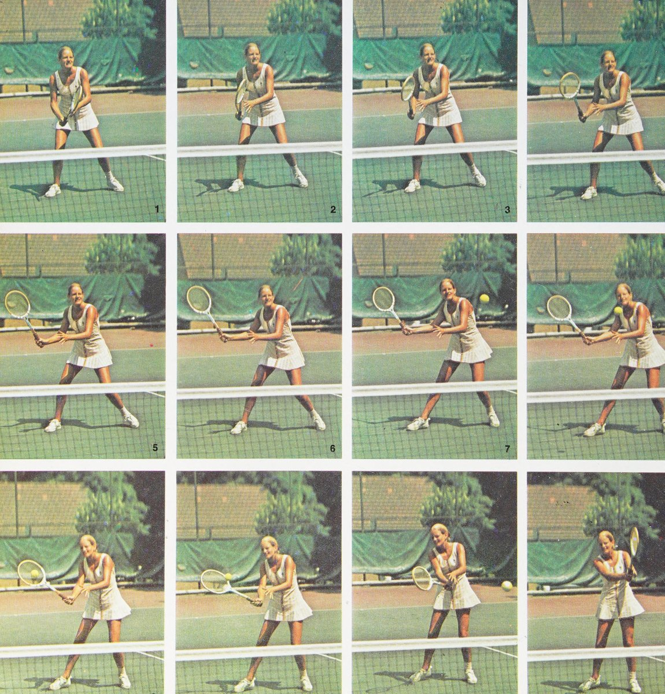
Figure 11: Net volley precision with Wendy Overton and Erik van Dillen — Compact punch, locked wrist, and zero backswing.
14. Đánh Giá Khách Quan Về Cú Đánh Trái Tay Hai Tay (Two-Handed Backhand)
Tại các giải trẻ gần đây tôi đã chứng kiến rất nhiều tay vợt trẻ thực hiện cú đánh trái tay bằng hai tay đến mức tôi cảm thấy cần phải đưa ra một số nhận xét về nét vẽ trong cuốn sách này. Tôi không sử dụng nét vẽ và, về mặt cá nhân, tôi cảm thấy nó có một số hạn chế Nhưng tôi nghĩ rằng chúng ta sẽ thấy điều đó ngày càng nhiều trong quần vợt trong thập kỷ tới, khi các tay vợt trẻ của chúng ta trưởng thành. Và tôi chắc chắn nhận ra rằng nó đã là một vũ khí đáng chú ý trong tay một số tay vợt đồng nghiệp của tôi trên đường đua, bao gồm cả những người trong hình - Jim McManus, Cliff Drysdale, Jimmy Connors và Bjorn Borg.At recent junior tournaments I have seen so many young players whacking shots with their two-handed backhands that I feel it is essential to make some remarks about the stroke in this book. I don’t use the stroke and, personally, I feel it has some limitations. But I think we’re going to see more and more of it in tennis in the next decade, as our junior players mature. And I certainly recognize that it has been a telling weapon in the hands of some of my fellow players on the circuit, including those pictured here — Jim McManus, Cliff Drysdale, Jimmy Connors and Bjorn Borg.
Cú đánh bằng hai tay không phải do Chris Evert phát minh ra, trái với niềm tin phổ biến. Nó đã được nhiều tay vợt sử dụng. Pancho Segura, người hướng dẫn thực sự đầu tiên của tôi khi tôi đã tham gia một phòng tập quần vợt ở Pasadena khi còn nhỏ, sử dụng rộng rãi cú thuận tay bằng hai tay. Tuy nhiên, Jimmy Evert, khi dạy con gái Chris và Jeanne, đã tạo ra một môn khoa học từ cú đánh trái tay bằng hai tay. Và Chrissie đã khiến cú đánh này trở thành tâm điểm chú ý khi cô đạt được danh hiệu ngôi sao khi còn là một thiếu niên.
The two-handed shot was not invented by Chris Evert, contrary to popular belief. It's been used by many players. Pancho Segura, who was my first real instructor when I took part in a tennis clinic in Pasadena as a kid, used the two-handed forehand extensively. Jimmy Evert, in teaching daughters Chris and Jeanne, did make a science out of the two-handed backhand, however. And Chrissie put the stroke firmly in the spotlight when she achieved stardom still as a teenager.
Cú trái tay bằng hai tay cho phép tay vợt có được đòn bẩy cực lớn khi đi qua bóng.
The two-handed backhand allows the player to get tremendous leverage coming across the ball.
Đó là một cú đánh được thực hiện trên cơ thể, giống như cú đánh gôn hoặc cú đánh bóng chày. Hình ảnh của Jim-my đây trông giống hệt như một vận động viên thuận tay phải trong môn bóng chày đang lao về phía hàng rào.
It is a stroke made across the body, like the golf swing or the baseball swing. The picture of Jimmy here looks exactly like a righthander in baseball going for the fences.
Việc truyền xoáy lên cho bóng bằng cú đánh là tương đối dễ dàng. Tay vợt có thể chạm bóng xa hơn về phía sau trong tư thế đứng của mình, thay vì ở phía trước như với cú đánh trái tay thông thường mà vẫn không bị mất lực hoặc độ chính xác đáng kể.
It is relatively easy to impart topspin to the ball with the stroke. The player can meet the ball farther back in his stance, rather than in front of him as with the conventional backhand stroke and still not lose substantial power or accuracy.
Vì vậy, đây là một cú đánh rất khó để “đọc””' và phòng thủ.
Thus it is a very difficult stroke to “read” and to defend against.
Tất nhiên, cú đánh này dễ hơn cú đánh trái tay thông thường để dạy cho những người trẻ có cánh tay chưa đủ khỏe để cầm vợt bằng một tay ở phía trái tay.
Of course the stroke is easier than the conventional backhand to teach to youngsters whose arms are not yet strong enough to handle the racquet with one hand on the backhand side.
Có thể nói là nó cũng dễ dàng hơn vì tay vợt không cần phải thay đổi cách cầm thuận tay cơ bản của mình để thực hiện cú đánh. Và vì đây là một cú đánh ngắn hơn được thực hiện gần cơ thể hơn với một bàn tay bổ sung mang lại sự ổn định, nên rất có thể nó sẽ không bị mất nhịp thường xuyên như cú đánh trái tay bằng một tay nhịp nhàng hơn.
It may be said to be easier, too, because the player does not have to change his basic forehand grip to make the stroke. And as it is a shorter stroke made closer to the body with an extra hand lending stability, chances are it will not get out of kilter as often as the more rhythmical one-handed backhand.
Điểm trừ lớn trong cú đánh là nó làm giảm đáng kể khả năng tiếp cận của tay vợt, cả ở sân sau và trên lưới. Nó cũng không linh hoạt trong nhiều kiểu tình huống bắn khác nhau xảy ra trong một trận đấu. Bóng cao, bóng thấp, bóng nảy kém - tất cả những bóng này đều có thể được xử lý dễ dàng hơn bằng một cú đánh trái tay bằng một tay có rãnh tốt. Điều quan trọng hơn nhiều đối với tay vợt trái tay bằng hai tay là phải vào được vị trí tốt để thực hiện cú trả bóng - một lý tưởng không phải lúc nào cũng “có thể đáp ứng được” trong thi đấu.
The big minus in the stroke is that it cuts down on a player’s reach a good deal, both in the backcourt and at net. It is also not as versatile in the many different types of shot situations that occur during a match. High balls, low balls, badbouncing balls — all of these can be handled more easily with a well-grooved one-handed backhand stroke. It is much more important for the two-handed backhand player to get into good position to make his return — an ideal that is not always “meetable” in competition.
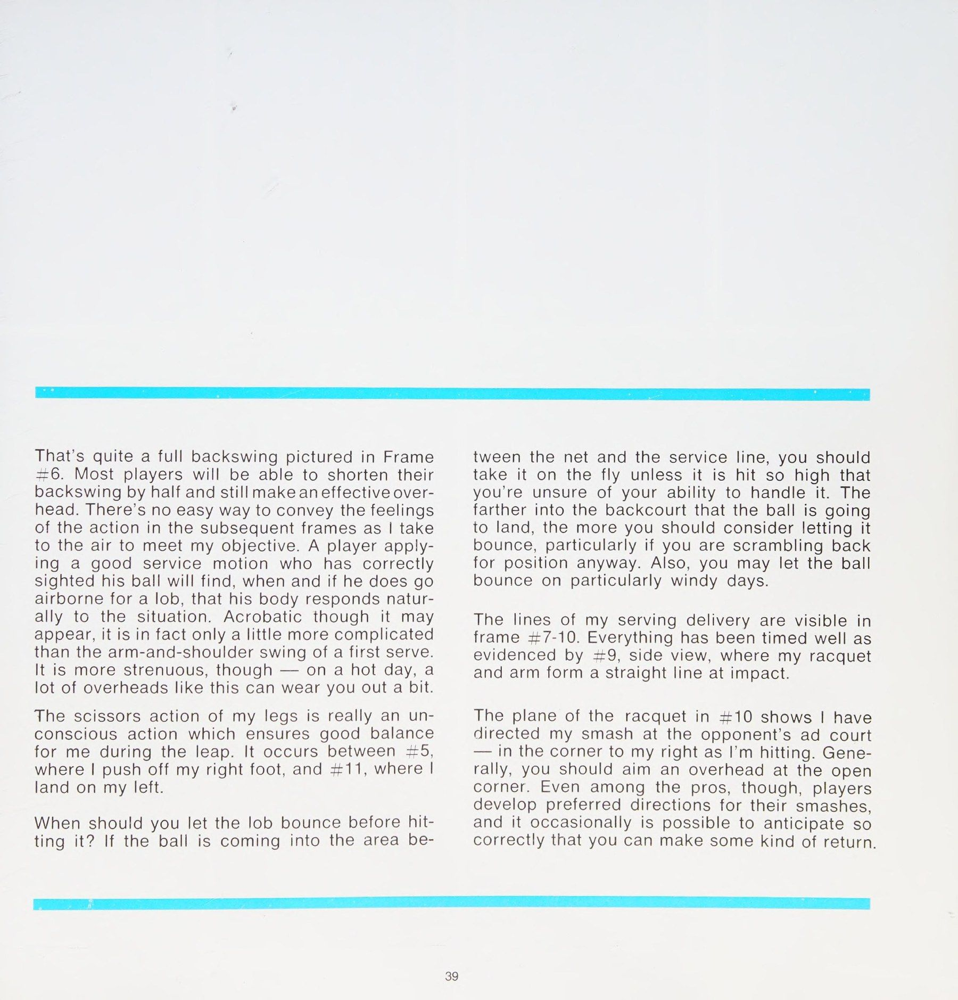
Figure 12: Stan Smith's authoritative overhead smash — Perfect sidewall alignment, non-dominant tracking arm, and peak contact point.
15. Nghệ Thuật Phối Hợp Đánh Đôi Đỉnh Cao (Better Doubles Play)
Chơi đôi hiệu quả, giống như một cuộc hôn nhân tốt đẹp, trước hết phụ thuộc vào tinh thần đồng đội. Hãy tìm một người mà bạn hòa hợp và có thể giao tiếp bên ngoài sân đấu, và rất có thể các bạn sẽ chơi tốt với nhau trên sân đấu.Effective doubles play, like a good marriage, depends first of all on teamwork. Find someone you get along with, and can communicate with, off the court, and chances are you will play well together on the court.
Giao tiếp là điều cần thiết không chỉ trong việc trao đổi ý tưởng về chiến lược trước và trong trận đấu mà còn trong lĩnh vực động viên lẫn nhau một cách khéo léo. Bạn phải biết khi nào nên nói và khi nào không nên nói, điều gì nên nói và điều gì không nên nói. Tất cả điều này phụ thuộc vào sự hiểu biết nhạy cảm về điều gì khiến đối tác của bạn phải hứng chịu sức nóng của cuộc cạnh tranh.
Communication is essential not just to exchanging ideas on strategy before and during a match, but in the area of tactful mutual encouragement as well. You’ve got to know when to talk and when not to talk, and what to say and what not to say. All of this depends on a sensitive understanding of what makes your partner tick in the heat of competition.
Mục tiêu chính của đội bạn trong nội dung đánh đôi là kiểm soát lưới. Đó là lý do tại sao việc thực hiện những quả giao bóng đầu tiên lại đặc biệt quan trọng - để ngăn chặn đối thủ của bạn tấn công. Đó cũng là lý do tại sao việc vào lưới nhanh chóng sau một cú giao bóng hoặc một cú đánh tiếp cận lại quan trọng. Càng ở gần lưới, bạn càng dễ dàng hạ gục đối thủ.
Your team’s main objective in doubles is to control the net. That’s why it’s especially important to get first serves in — to prevent your opponents from going on the offensive. That’s also why its vital to get to net quickly after a serve or an approach shot. The closer you are to net, the easier it will be to hit down on your opponents.
Thật khó để đánh một người chiến thắng hoàn toàn trong nội dung đánh đôi vì có hai tay vợt che chắn phần sân đối diện, vì vậy mục tiêu của một đội đánh đôi giỏi trong suốt trận đấu là đặt bóng gần một trong các chân của đối phương và khiến anh ta phạm lỗi hoặc thực hiện cú trả bóng cao có thể bị cản phá ở một góc nhọn.
It is hard to hit an outright winner in doubles since there are two players covering the opposite court, so the goal of a good doubles team throughout a match should be to place the ball near one of the opponent's feet and cause him to make an error or produce a high volley return that can be put away at a sharp angle.
Khi trở lại giao bóng, mục tiêu của bạn cũng như vậy.
When returning service, your goal is the same.
Khi thực hiện cú trả giao bóng trái tay, hãy cố gắng chọc vào chân Đối thủ khi anh ta lao vào phía sau cú giao bóng của mình.
On a backhand return, try to chip to the feet of your Opponent as he rushes in behind his serve.
Khi trả bóng thuận tay, hãy sử dụng nhiều xoáy lên để giữ bóng thấp và ngắn ở phần sân đối diện.
On a forehand return, employ a lot of topspin to keep the ball low and short in the opposite court.
Mặc dù cú trả bóng chéo sân là phổ biến nhất, nhưng bạn không nên chỉ dựa vào nó nếu không đội đối phương sẽ bắt đầu săn trộm. Thỉnh thoảng, việc quay trở lại đường biên sẽ khiến tay vợt lưới đối phương không thể săn trộm với bất kỳ tần suất nào. Anh ta sẽ không muốn để bạn ghi điểm mà các chuyên gia gọi là 'điểm rẻ' đối với anh ta, tức là một điểm mà tay vợt thậm chí không chạm vào bóng.
While the crosscourt return is most common, you should not rely on it exclusively or the opposing team will begin to poach. An occasional return down the line will keep the opposing net player from poaching with any frequency. He will not want to let you score what the pros call a “cheap point” off him, that is, a point in which the player doesn’t even touch the ball.
Lobbing cũng có hiệu quả chống lại kẻ săn trộm và nên được sử dụng thường xuyên trong trường hợp này và trong các trường hợp khẩn cấp khác khi chơi đôi. Một cú lốp bóng sâu về phía trái tay của đối phương có thể loại bỏ đòn tấn công mạnh mẽ nhất.
Lobbing is also effective against the poacher and should be used regularly in this and in other emergencies in doubles play. A deep lob to an opponent’s backhand side can take the sting out of the most aggressive attack.
Khi đánh lưới trong khi đối tác của tôi đang giao bóng, tôi cố gắng đứng càng gần trung tâm sân càng tốt. Tôi nhận thấy điều này khiến nhiều đối thủ sợ hãi vì nó cắt giảm không gian của họ để thực hiện một cú trả bóng chéo sân một cách an toàn. | Tôi đang mạo hiểm rằng đối thủ sẽ đánh trúng con hẻm của tôi - nhưng áp lực buộc anh ta phải thực hiện cú đánh đặc biệt chứ không phải tôi.
When playing net while my partner is serving, I try to stand as close to the center of court as possible. I find this intimidates many opponents since it cuts down on their space for safely placing a crosscourt return. I am taking a risk that the opponent will hit down my alley — but the pressure is on him to make the exceptional shot, not me.
Khi mọi thứ không diễn ra suôn sẻ về mặt chiến thuật trong trận đấu, hãy nhanh chóng thay đổi kế hoạch trò chơi của bạn, tốt nhất là áp dụng một số sơ đồ thay thế mà bạn đã thảo luận trước đó. Nếu bạn chỉ thiếu những cú đánh dễ dàng, hãy giữ nguyên kế hoạch nhưng tập trung hơn. Tất nhiên, “Luôn thay đổi một trận thua” là phương châm cho cả trận đấu đôi và trận đấu đơn.
When things aren’t going well in a match tactically, change your game plan promptly, preferably adopting some alternative scheme that you have already discussed beforehand. If you are just missing easy shots, keep the same plan but concentrate harder. “Always change a losing game” is a motto for both doubles and singles play, of course.
Trong nội dung đánh đôi, cả hai đấu thủ nên đi về vạch cuối sân khi gặp khó khăn trong việc lấy lại quả giao bóng của đối phương. Tay vợt đánh đôi thường sử dụng người đánh lưới làm mục tiêu cho các cú đánh của họ. Đột nhiên không có người đỡ lưới làm mục tiêu, một tay vợt đối phương có thể bắt đầu đánh sai một vài quả. Nếu không có gì khác, nó sẽ khiến tay vợt đối phương phải suy nghĩ và có thể mất tập trung.
In doubles it is a good idea for both players to go to the baseline when having trouble getting an opponent's serve back. Often doubles players use the net man as a target for their shots. Suddenly without a net man for target, an opposing player may begin to mishit a few. If nothing else, it would cause opposing players to think and possibly lose some of their concentration.
Một thủ thuật khác để xử lý một cú giao bóng khó là Đứng lùi xa hơn để thực hiện cú giao bóng đó. Đôi khi điều này sẽ gây nhầm lẫn cho quan điểm của người giao bóng và khiến anh ta phải giao bóng lâu dài. Ít nhất điều đó cũng sẽ khiến anh ấy băn khoăn về chiến thuật của bạn.
Another trick for handling a tough service is to Stand farther back for it. Sometimes this will confuse the server’s perspective and make him serve long. Again at least it will set him to wondering about your tactics.
Cuối cùng, cả hai tay vợt trong đội đánh đôi nên cố gắng hết sức ở mọi điểm. Điều này sẽ giữ cho sự tin cậy lẫn nhau luôn ở mức cao ngay cả khi những sai sót không thể tránh khỏi xảy ra. Và sự tin tưởng lẫn nhau là chìa khóa cho tinh thần đồng đội thực sự ở nội dung đôi.
Finally, both players on a doubles team should try hard on every point. This will keep mutual confidence high even when the inevitable errors occur. And mutual confidence is the key to real teamwork in doubles.
16. Trò Chơi Tâm Lý Thi Đấu & Kiểm Soát Áp Lực (The Psychological Game)
Quần vợt cạnh tranh, giống như bất cứ thứ gì mang tính cạnh tranh, đều bộc lộ những điều tốt nhất và tồi tệ nhất ở con người. Các tay vợt trên đường đua chuyên nghiệp phản ứng với áp lực giống như những người nghiệp dư tại các sân và câu lạc bộ trong cả nước. Một số tay vợt có xu hướng nói nhiều trong một trận đấu căng thẳng. Những người khác sợ hãi đến mức gần như không thể lẩm bẩm một lời. Một số gặp khó khăn khi cử động tay hoặc chân đột ngột. Những người khác bị mờ mắt. Một số bị co giật, số khác có những đặc điểm nhẹ như liên tục lau tay ngay cả khi tay khô. Tôi đã đề cập trước đó trong cuốn sách này tầm quan trọng của việc thư giãn - giảm bớt căng thẳng thần kinh càng nhiều càng tốt - để chơi tốt. Đây tôi muốn thảo luận tổng quát hơn về bối cảnh của những căng thẳng như vậy và có lẽ chỉ ra một số cách ứng phó mang tính xây dựng đối với tay vợt ở bất kỳ trình độ kỹ năng nào.Competitive tennis, like competitive anything, brings out the best and worst in people. Players on the pro circuit react to pressure just like the amateurs at courts and clubs throughout the country. Some players tend to talk a lot in a tight match. Others get so scared they can barely mutter a word. Some have trouble moving their arms or legs all of a sudden. Others experience blurred vision. Some develop twitches, others mild idiosyncracies like constantly wiping their hands even when their hands are dry. I mentioned earlier in this book how important it is to relax — to reduce such nervous tensions as much as possible — to play well. Here I want to discuss more generally the background for such tensions, and perhaps point out some constructive ways of coping with them for players of any level of skill.
Như một quy luật tôi nghĩ cách một người cư xử trên sân quần vợt là a. phản ánh tính cách cơ bản của anh ta. Tuy nhiên, có lẽ có một số điều không thể thay đổi được trong bản chất của một người tôi nghi ngờ những điều này ít hơn hầu hết chúng ta nhận ra.
As a rule I think the way a person behaves on a tennis court is a reflection of his basic personality. There are probably some things in a person’s makeup that can’t be changed, though I suspect these are fewer than most of us realize.
Ngoài ra, hành vi của sân đấu cũng phản ánh tâm trạng của một người vào thời điểm đó. Nếu tôi ra chơi với bao nỗi lo hiện tại, tôi thường chơi kém hiệu quả. Khi cuộc sống ngoài sân đấu của tôi đang diễn ra suôn sẻ, tôi thường chơi hết mình.
Also court behavior reflects a person’s mood at the time. If I come out to play with a lot of current worries, I usually play less effectively. When my life off the court is going smoothly, I usually play my best.
Không một tay vợt nào có thể kiểm soát được mọi diễn biến và cảm xúc trong đời sống riêng tư của mình, cũng như không thể làm lại hoàn toàn tính cách của mình. Nhưng chúng ta có thể phấn đấu vì điều gì, tôi tin chắc rằng, là giảm thiểu những khía cạnh trong cấu trúc cảm xúc của chúng ta và những áp lực trong hoàn cảnh cuộc sống hiện tại có xu hướng khiến chúng ta mất tập trung trong việc chơi hết khả năng của mình.
It is not possible for any player to control all the events and emotions in his private life, any more than he can totally remake his personality. But what we can strive for, I firmly believe, is to minimize those aspects of our emotional makeup and those pressures in our current life situation that would tend to distract us from playing to the best of our abilities.
Nói cách khác, khi bạn bước ra sân, hãy giải tỏa tâm trí của bạn khỏi mọi thứ không liên quan đến mục tiêu chơi trận đấu tốt nhất có thể.
In other words, when you walk out on the court, clear your mind of everything unrelated to the goal of playing the match as well as you can.
Tuy nhiên, sự chuẩn bị tinh thần không chỉ là loại bỏ những điều tiêu cực và không liên quan. Nó cũng yêu cầu bạn phát triển một chiến lược để chống lại đối thủ trong trận đấu. Một chiến lược như vậy sẽ bao gồm loại giao bóng mà bạn sẽ nhấn mạnh, chẳng hạn, hoặc tốc độ chơi mà bạn nghĩ mình sẽ là tay vợt hiệu quả hơn. Nó cũng sẽ bao gồm các chiến lược thay thế mà bạn có thể sử dụng để điều chỉnh theo những diễn biến bất ngờ trong trận đấu, để bạn không bị khuất phục trước tính bốc đồng hoặc chủ bại.
Mental preparedness is not just emptying out the negative and irrelevant things, however. It also requires you to develop a strategy to use against your opponent for the match. Such a strategy would encompass the type of service you will emphasize, for instance, or the pace of play at which you think you will be the more effective player. It would also include alternative strategies for you to use to adjust to unexpected developments in the match, so you won’t succumb to impulsiveness or defeatism.
Trên hết, một chiến lược được suy tính trước giúp bạn tập trung và khiến bạn ít bị ảnh hưởng bởi thử thách cảm xúc khi phải cạnh tranh trực tiếp với người khác. Tôi đừng tin vào lý thuyết cho rằng tay vợt phải phát triển một loại phức cảm căm ghét để giành chiến thắng trong một trận đấu khó khăn. Trong thực tế,! nghĩ rằng việc “‘cá nhân hóa” cuộc gặp gỡ theo cách này có khả năng gây tổn hại cho trò chơi của chính bạn. |! cũng sẽ bao gồm một số sự tự trấn an bản thân trong chương trình chuẩn bị sẵn sàng cho trận đấu.
Above all, a pre-meditated strategy gives you a focus of concentration and makes you less vulnerable to being affected by the emotional challenge of competing against another person head on. I do not subscribe to the theory that a player has to develop a kind of hate complex in order to win a tough match. In fact, I think it is potentially damaging to your own game to “personalize” the encounter in this way. I would also include some self-psyching in the program of getting ready for a match.
Nếu trước đây bạn đã đánh bại đối thủ hiện tại của mình, điều này sẽ xuất hiện dưới dạng gợi nhớ lại — một cách chi tiết — chiến thắng của bạn trong những trao đổi quan trọng trong những lần trước đó. Nếu anh ta luôn đánh bại bạn, hãy nhớ đến những pha căng thẳng trong những trận đấu mà bạn chiếm thế thượng phong hoặc những pha đấu với các đối thủ khác khi trận đấu của bạn đang ở đỉnh cao.
If you have beaten your present opponent before, this would come in the form of calling back to mind — in detail — your winning critical exchanges on those earlier occasions. If he’s beaten you all the time, bring to mind the stretches within those matches when you had the upper hand, or periods with other opponents when your game has been at its best.
Ngẫu nhiên mà nói, cũng đúng là tình trạng thể chất của bạn càng tốt thì cách tiếp cận tinh thần tích cực của bạn sẽ càng vững chắc - và nó sẽ duy trì được lâu hơn - trong suốt trận đấu. Vì vậy, có được thể trạng tốt cũng là một phần của sự chuẩn bị tinh thần.
Incidentally, it’s also true that the better your physical condition, the firmer your positive mental approach will be — and the longer it will remain — during a match. So being in good shape is part of mental preparedness, too.
Các trận đấu quần vợt nổi tiếng - có lẽ còn nổi tiếng hơn các sự kiện trong bất kỳ môn thể thao nào khác - vì vận may thay đổi đột ngột. Phần lớn điều này liên quan đến tâm lý.
Tennis matches are famous — perhaps more so than events in any other sport — for their sudden swings of fortune. A lot of this is psychological.
Hãy chấp nhận sự nguy hiểm để vượt lên dẫn trước trong một trận đấu. Đầu tiên, bạn có thể bắt đầu chơi thận trọng hơn và mắc lỗi. Thứ hai, đối thủ của bạn có lẽ đã từ bỏ cơ hội của mình, có thể bắt đầu chơi lỏng lẻo đến mức các cú đánh của anh ta bắt lửa.
Take the dangers in getting well ahead in a match. First, you may start to play more cautiously and make mistakes. Second, your opponent having perhaps given up on his chances, may begin to play so loosely that his strokes catch fire.
Bắt lửa bằng cách thả lỏng và tung hết sức là điều bạn nên phấn đấu, tất nhiên, nếu bạn bị tụt lại phía sau trong một trận đấu. Và hối hả thực hiện từng cảnh quay, kể cả những cảnh “không thể”. Tôi nên nói đặc biệt là những điều không thể, ‘bởi vì nếu bạn chỉ ra một trong những điều đó, bạn có thể giáng một đòn nặng nề vào sự tự tin của đối thủ.
Catching fire by relaxing and hitting all out is what you should strive for, of course, should you fall way behind in a match. And hustle on every shot, even the “impossible” ones. I should say especially the impossible ones, because if you make a point off one of those, you may deal a severe blow to your opponent’s confidence.
Cuối cùng, có sự tàn phá của những phản ứng thái quá trước những sai lầm hoặc những sai lầm tồi tệ. Những phản ứng như vậy có thể làm hỏng sự tập trung và động tác vuốt bóng của tay vợt trong phần còn lại của trận đấu. Tôi nghĩ rằng chúng xảy ra thường xuyên hơn ở những tay vợt vẫn thiếu tự tin vào khả năng của bản thân, chẳng hạn như kiểu người cầu toàn hoặc người thực sự nghĩ rằng mình cần nghỉ ngơi hơn những người khác. Nhà vô địch thực sự mắc phải những lỗi ngớ ngẩn hoặc những điều không may mắn sẽ thoát ra khỏi tâm trí và tiếp tục trò chơi của mình.
Finally, there is the destructiveness of exaggerated reactions to mistakes or bad breaks. Such reactions can ruin a player’s concentration and his stroking for the rest of the match. I think they occur more often among players who still lack confidence in their own abilities, such as the perfectionist type, or the person who really thinks he needed the break more than the other guy. The real champion puts silly errors or unlucky breaks out of his mind and gets on with his game.